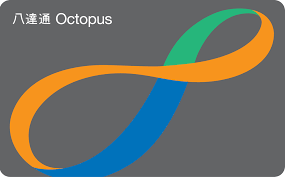

<!DOCTYPE html>
<html lang="zh-CN">
<head>
  <meta charset="UTF-8" />
  <meta name="viewport" content="width=device-width, initial-scale=1.0" />
  <title>HKScholarPass</title>
  <script src="https://cdn.tailwindcss.com"></script>
  <link rel="stylesheet" href="https://cdnjs.cloudflare.com/ajax/libs/font-awesome/6.5.2/css/all.min.css" />
  <script src="./official-programme-data.js"></script>
  <script>
    tailwind.config = {
      theme: {
        extend: {
          colors: {
            ink: "#111827",
            mist: "#eef4fb",
            harbor: "#001F3F",
            steel: "#355e8a",
            pearl: "#f8fbff",
            line: "rgba(255,255,255,.1)",
            gold: "#D4AF37",
            bauhinia: "#7B205D"
          },
          boxShadow: {
            soft: "0 24px 70px rgba(15,23,42,.08)",
            luxe: "0 30px 90px rgba(15,23,42,.14)"
          }
        }
      }
    };
  </script>
  <style>
    html {
      zoom: 0.8;
    }
    @supports not (zoom: 1) {
      html {
        transform: scale(0.8);
        transform-origin: top left;
        width: 125%;
      }
    }
    body {
      font-family: "Segoe UI", "PingFang SC", "Microsoft YaHei", sans-serif;
      min-height: 100vh;
      color: #0f172a;
      background:
        radial-gradient(circle at 18% 6%, rgba(255,255,255,.96), transparent 28%),
        radial-gradient(circle at 82% 4%, rgba(122,158,196,.22), transparent 30%),
        radial-gradient(circle at 50% 45%, rgba(226,235,246,.88), transparent 38%),
        linear-gradient(180deg, #fbfdff 0%, #edf3fa 46%, #ffffff 100%);
    }
    body::before {
      content: "";
      position: fixed;
      inset: 0;
      pointer-events: none;
      background:
        linear-gradient(90deg, rgba(255,255,255,.55) 1px, transparent 1px),
        linear-gradient(180deg, rgba(255,255,255,.38) 1px, transparent 1px);
      background-size: 72px 72px;
      mask-image: linear-gradient(180deg, rgba(0,0,0,.45), transparent 58%);
    }
    h1, h2, h3, .serif-title {
      font-family: "Noto Serif SC", "Source Han Serif SC", "STSong", serif;
      letter-spacing: .02em;
    }
    .glass {
      background: rgba(255,255,255,.72);
      border: 1px solid rgba(214,224,236,.72);
      backdrop-filter: blur(22px);
      -webkit-backdrop-filter: blur(22px);
    }
    .apple-panel {
      background:
        radial-gradient(circle at 72% 18%, rgba(255,255,255,.98), transparent 25%),
        linear-gradient(145deg, rgba(255,255,255,.94), rgba(244,248,254,.76));
      border: 1px solid rgba(255,255,255,.78);
      box-shadow: 0 34px 100px rgba(15,23,42,.12), inset 0 1px 0 rgba(255,255,255,.92);
    }
    .tool-tile {
      background:
        linear-gradient(180deg, rgba(255,255,255,.94), rgba(243,247,252,.84)),
        radial-gradient(circle at 50% 0, rgba(255,255,255,.9), transparent 52%);
      border: 1px solid rgba(255,255,255,.82);
      box-shadow: 0 18px 55px rgba(15,23,42,.08), inset 0 1px 0 rgba(255,255,255,.9);
    }
    .tool-tile:hover {
      transform: translateY(-3px);
      box-shadow: 0 26px 70px rgba(15,23,42,.13);
    }
    .harbor-visual {
      background:
        radial-gradient(circle at 20% 24%, rgba(255,255,255,.95), transparent 18%),
        radial-gradient(circle at 74% 72%, rgba(23,59,99,.18), transparent 28%),
        linear-gradient(145deg, rgba(255,255,255,.78), rgba(231,238,248,.55));
      box-shadow: inset 0 1px 0 rgba(255,255,255,.85), 0 24px 80px rgba(15,23,42,.1);
    }
    .map-pin {
      position: absolute;
      transform: translate(-50%, -50%);
    }
    .map-pin-dot {
      box-shadow: 0 0 0 7px rgba(23,59,99,.08), 0 12px 28px rgba(23,59,99,.18);
    }
    .map-pin-label {
      transform: translate(-50%, -8px);
    }
    .desktop-shell {
      position: relative;
      overflow: hidden;
      border: 1px solid rgba(255,255,255,.72);
      background:
        linear-gradient(145deg, rgba(255,255,255,.86), rgba(235,242,250,.72)),
        radial-gradient(circle at 72% 12%, rgba(255,255,255,.95), transparent 24%);
      box-shadow: 0 36px 110px rgba(15,23,42,.13), inset 0 1px 0 rgba(255,255,255,.9);
      backdrop-filter: blur(24px);
      -webkit-backdrop-filter: blur(24px);
    }
    .desktop-shell::before {
      content: "";
      position: absolute;
      inset: 0;
      pointer-events: none;
      background:
        linear-gradient(180deg, transparent 34%, rgba(23,59,99,.09) 34.4%, transparent 35%),
        linear-gradient(90deg, transparent 8%, rgba(23,59,99,.08) 8.2%, transparent 8.7%),
        linear-gradient(90deg, transparent 19%, rgba(23,59,99,.08) 19.2%, transparent 19.8%),
        linear-gradient(90deg, transparent 27%, rgba(23,59,99,.07) 27.2%, transparent 27.8%),
        linear-gradient(90deg, transparent 43%, rgba(23,59,99,.07) 43.2%, transparent 43.8%),
        linear-gradient(90deg, transparent 63%, rgba(23,59,99,.07) 63.2%, transparent 63.8%),
        linear-gradient(90deg, transparent 78%, rgba(23,59,99,.08) 78.2%, transparent 78.7%);
      opacity: .32;
      transform: translate3d(calc(var(--mx, 0) * 1px), calc(var(--my, 0) * 1px), 0);
      transition: transform .18s ease-out;
      mask-image: linear-gradient(180deg, rgba(0,0,0,.8), transparent 42%);
    }
    .crest-badge {
      clip-path: polygon(50% 0, 88% 12%, 88% 58%, 50% 100%, 12% 58%, 12% 12%);
    }
    .programme-scroll {
      scrollbar-width: thin;
      scrollbar-color: rgba(23,59,99,.26) transparent;
    }
    .route-glow {
      filter: drop-shadow(0 0 9px rgba(20,184,166,.55));
    }
    .line-clamp-2 {
      display: -webkit-box;
      -webkit-line-clamp: 2;
      -webkit-box-orient: vertical;
      overflow: hidden;
    }
    .line-clamp-3 {
      display: -webkit-box;
      -webkit-line-clamp: 3;
      -webkit-box-orient: vertical;
      overflow: hidden;
    }
    .fade-up {
      animation: fadeUp .55s ease both;
    }
    @keyframes fadeUp {
      from { opacity: 0; transform: translateY(16px); }
      to { opacity: 1; transform: translateY(0); }
    }
    .hide-scrollbar::-webkit-scrollbar {
      display: none;
    }
    .hide-scrollbar {
      scrollbar-width: none;
      -ms-overflow-style: none;
    }
    body {
      color: rgba(255,255,255,.88);
      background:
        linear-gradient(135deg, rgba(0,11,24,.78), rgba(0,11,24,.88)),
        url("https://upload.wikimedia.org/wikipedia/commons/thumb/2/23/Hong_Kong_Skyline_Restitch_-_Dec_2007.jpg/1920px-Hong_Kong_Skyline_Restitch_-_Dec_2007.jpg"),
        radial-gradient(circle at 18% 8%, rgba(123,32,93,.34), transparent 24%),
        radial-gradient(circle at 80% 15%, rgba(212,175,55,.16), transparent 22%),
        linear-gradient(135deg, #000B18 0%, #001F3F 48%, #000B18 100%);
      background-size: cover, cover, auto, auto, auto;
      background-position: center, center top, center, center, center;
      background-attachment: fixed;
    }
    body::before {
      background:
        repeating-radial-gradient(ellipse at 18% 42%, rgba(255,255,255,.05) 0 1px, transparent 1px 13px),
        repeating-radial-gradient(ellipse at 82% 54%, rgba(255,255,255,.04) 0 1px, transparent 1px 14px);
      background-size: 780px 460px, 760px 430px;
      opacity: .05;
      mask-image: linear-gradient(180deg, rgba(0,0,0,.85), rgba(0,0,0,.5) 45%, transparent 100%);
    }
    .topography-pattern {
      position: fixed;
      inset: 0;
      pointer-events: none;
      background-image:
        repeating-radial-gradient(ellipse at 22% 50%, rgba(255,255,255,.08) 0 1px, transparent 1px 10px),
        repeating-radial-gradient(ellipse at 75% 40%, rgba(255,255,255,.06) 0 1px, transparent 1px 12px);
      opacity: .05;
      mix-blend-mode: screen;
    }
    .hk-glass {
      border: 1px solid rgba(255,255,255,.1);
      background: rgba(255,255,255,.03);
      backdrop-filter: blur(20px);
      -webkit-backdrop-filter: blur(20px);
      box-shadow: 0 22px 70px rgba(0,0,0,.25), inset 0 1px 0 rgba(255,255,255,.08);
    }
    .hk-hover {
      transition: transform .24s ease, border-color .24s ease, background .24s ease, box-shadow .24s ease;
    }
    .hk-hover:hover {
      transform: scale(1.02);
      border-color: rgba(212,175,55,.35);
      box-shadow: 0 28px 80px rgba(0,0,0,.32), 0 0 0 1px rgba(212,175,55,.08) inset;
    }
    .programme-card-hover {
      transition: border-color .2s ease, background .2s ease, box-shadow .2s ease;
    }
    .programme-card-hover:hover {
      border-color: rgba(212,175,55,.32);
      background: rgba(255,255,255,.045);
      box-shadow: 0 18px 50px rgba(0,0,0,.24), inset 0 0 0 1px rgba(212,175,55,.06);
      transform: none;
    }
    .route-flow {
      stroke-dasharray: 16 18;
      animation: routeFlow 1.6s linear infinite;
      filter: drop-shadow(0 0 8px rgba(212,175,55,.7));
    }
    @keyframes routeFlow {
      to { stroke-dashoffset: -68; }
    }
    .detail-embed .bg-white,
    .detail-embed .bg-pearl,
    .detail-embed .bg-mist {
      background: rgba(255,255,255,.055) !important;
    }
    .detail-embed .text-ink,
    .detail-embed .text-harbor,
    .detail-embed .text-slate-600,
    .detail-embed .text-slate-700 {
      color: rgba(255,255,255,.82) !important;
    }
    .detail-embed .text-steel,
    .detail-embed .text-navy {
      color: #D4AF37 !important;
    }
    .detail-embed .border-line {
      border-color: rgba(255,255,255,.1) !important;
    }
    .detail-embed input,
    .detail-embed select,
    .detail-embed textarea {
      background: rgba(7,21,33,.84) !important;
      color: rgba(255,255,255,.9) !important;
      border-color: rgba(255,255,255,.12) !important;
    }
    .detail-embed select option,
    .detail-embed datalist option {
      background: #071521 !important;
      color: rgba(255,255,255,.92) !important;
    }
    .detail-embed table {
      background: transparent !important;
    }
    .detail-embed > section {
      margin-top: 0 !important;
    }
  </style>
</head>
<body>
  <div id="root"></div>
  <script crossorigin src="https://unpkg.com/react@18/umd/react.development.js"></script>
  <script crossorigin src="https://unpkg.com/react-dom@18/umd/react-dom.development.js"></script>
  <script src="https://unpkg.com/framer-motion@10.16.4/dist/framer-motion.js"></script>
  <script src="https://unpkg.com/@babel/standalone/babel.min.js"></script>
  <script type="text/babel">
    const STORAGE_KEY = "hk-grad-connect-accounts-v1";
    const FAVORITES_KEY = "hk-grad-connect-favorites-v1";

    const QS_RANKING_SOURCES = [
      {
        label: "QS World University Rankings 2026",
        url: "https://www.topuniversities.com/qs-top-uni-wur"
      },
      {
        label: "Top 200 University in the QS World University Rankings (2025 & 2026)",
        url: "https://student.dongzong.my/images/study/Uranking/2026-qs/2026-qs-world-university-rankings_20250718.pdf"
      }
    ];

    const QS_TOP_100 = [
      { rank: 1, previousRank: 1, name: "Massachusetts Institute of Technology (MIT)", region: "美国" },
      { rank: 2, previousRank: 2, name: "Imperial College London", region: "英国" },
      { rank: 3, previousRank: 6, name: "Stanford University", region: "美国" },
      { rank: 4, previousRank: 3, name: "University of Oxford", region: "英国" },
      { rank: 5, previousRank: 4, name: "Harvard University", region: "美国" },
      { rank: 6, previousRank: 5, name: "University of Cambridge", region: "英国" },
      { rank: 7, previousRank: 7, name: "ETH Zurich (Swiss Federal Institute of Technology)", region: "瑞士" },
      { rank: 8, previousRank: 8, name: "National University of Singapore (NUS)", region: "新加坡" },
      { rank: 9, previousRank: 9, name: "UCL (University College London)", region: "英国" },
      { rank: 10, previousRank: 10, name: "California Institute of Technology (Caltech)", region: "美国" },
      { rank: 11, previousRank: 17, name: "The University of Hong Kong", region: "中国香港" },
      { rank: 12, previousRank: 15, name: "Nanyang Technological University, Singapore (NTU Singapore)", region: "新加坡" },
      { rank: 13, previousRank: 21, name: "University of Chicago", region: "美国" },
      { rank: 14, previousRank: 14, name: "Peking University", region: "中国内地" },
      { rank: 15, previousRank: 11, name: "University of Pennsylvania", region: "美国" },
      { rank: 16, previousRank: 16, name: "Cornell University", region: "美国" },
      { rank: 17, previousRank: 20, name: "Tsinghua University", region: "中国内地" },
      { rank: 17, previousRank: 12, name: "University of California, Berkeley (UCB)", region: "美国" },
      { rank: 19, previousRank: 13, name: "The University of Melbourne", region: "澳大利亚" },
      { rank: 20, previousRank: 19, name: "The University of New South Wales", region: "澳大利亚" },
      { rank: 21, previousRank: 23, name: "Yale University", region: "美国" },
      { rank: 22, previousRank: 26, name: "École Polytechnique Fédérale de Lausanne", region: "瑞士" },
      { rank: 22, previousRank: 28, name: "Technical University of Munich", region: "德国" },
      { rank: 24, previousRank: 32, name: "Johns Hopkins University", region: "美国" },
      { rank: 25, previousRank: 22, name: "Princeton University", region: "美国" },
      { rank: 25, previousRank: 18, name: "The University of Sydney", region: "澳大利亚" },
      { rank: 27, previousRank: 29, name: "McGill University", region: "加拿大" },
      { rank: 28, previousRank: 24, name: "PSL University", region: "法国" },
      { rank: 29, previousRank: 25, name: "University of Toronto", region: "加拿大" },
      { rank: 30, previousRank: 39, name: "Fudan University", region: "中国内地" },
      { rank: 31, previousRank: 40, name: "King's College London (KCL)", region: "英国" },
      { rank: 32, previousRank: 30, name: "Australian National University", region: "澳大利亚" },
      { rank: 32, previousRank: 36, name: "The Chinese University of Hong Kong", region: "中国香港" },
      { rank: 34, previousRank: 27, name: "University of Edinburgh", region: "英国" },
      { rank: 35, previousRank: 34, name: "The University of Manchester", region: "英国" },
      { rank: 36, previousRank: 37, name: "Monash University", region: "澳大利亚" },
      { rank: 36, previousRank: 32, name: "The University of Tokyo", region: "日本" },
      { rank: 38, previousRank: 34, name: "Columbia University", region: "美国" },
      { rank: 38, previousRank: 31, name: "Seoul National University", region: "韩国" },
      { rank: 40, previousRank: 38, name: "University of British Columbia", region: "加拿大" },
      { rank: 41, previousRank: 46, name: "Institut Polytechnique de Paris", region: "法国" },
      { rank: 42, previousRank: 50, name: "Northwestern University", region: "美国" },
      { rank: 42, previousRank: 40, name: "The University of Queensland", region: "澳大利亚" },
      { rank: 44, previousRank: 47, name: "The Hong Kong University of Science and Technology", region: "中国香港" },
      { rank: 45, previousRank: 44, name: "University of Michigan-Ann Arbor", region: "美国" },
      { rank: 46, previousRank: 42, name: "University of California, Los Angeles (UCLA)", region: "美国" },
      { rank: 47, previousRank: 49, name: "Delft University of Technology", region: "荷兰" },
      { rank: 47, previousRank: 45, name: "Shanghai Jiao Tong University", region: "中国内地" },
      { rank: 49, previousRank: 47, name: "Zhejiang University", region: "中国内地" },
      { rank: 50, previousRank: 56, name: "Yonsei University", region: "韩国" },
      { rank: 51, previousRank: 54, name: "University of Bristol", region: "英国" },
      { rank: 52, previousRank: 58, name: "Carnegie Mellon University", region: "美国" },
      { rank: 53, previousRank: 55, name: "The University of Amsterdam", region: "荷兰" },
      { rank: 54, previousRank: 57, name: "The Hong Kong Polytechnic University", region: "中国香港" },
      { rank: 55, previousRank: 43, name: "New York University (NYU)", region: "美国" },
      { rank: 56, previousRank: 50, name: "London School of Economics and Political Science (LSE)", region: "英国" },
      { rank: 57, previousRank: 50, name: "Kyoto University", region: "日本" },
      { rank: 58, previousRank: 59, name: "Ludwig-Maximilians-Universität München", region: "德国" },
      { rank: 58, previousRank: 60, name: "Universiti Malaya (UM)", region: "马来西亚" },
      { rank: 60, previousRank: 63, name: "KU Leuven", region: "比利时" },
      { rank: 61, previousRank: 67, name: "Korea University", region: "韩国" },
      { rank: 62, previousRank: 61, name: "Duke University", region: "美国" },
      { rank: 63, previousRank: 62, name: "City University of Hong Kong", region: "中国香港" },
      { rank: 63, previousRank: 68, name: "National Taiwan University (NTU)", region: "中国台湾" },
      { rank: 65, previousRank: 65, name: "The University of Auckland", region: "新西兰" },
      { rank: 66, previousRank: 72, name: "University of California, San Diego (UCSD)", region: "美国" },
      { rank: 67, previousRank: 101, name: "King Fahd University of Petroleum & Minerals", region: "沙特阿拉伯" },
      { rank: 68, previousRank: 66, name: "University of Texas at Austin", region: "美国" },
      { rank: 69, previousRank: 79, name: "Brown University", region: "美国" },
      { rank: 70, previousRank: 73, name: "Université Paris-Saclay", region: "法国" },
      { rank: 70, previousRank: 69, name: "University of Illinois at Urbana-Champaign", region: "美国" },
      { rank: 72, previousRank: 75, name: "Lund University", region: "瑞典" },
      { rank: 72, previousRank: 63, name: "Sorbonne University", region: "法国" },
      { rank: 74, previousRank: 69, name: "The University of Warwick", region: "英国" },
      { rank: 75, previousRank: 87, name: "Trinity College Dublin, The University of Dublin", region: "爱尔兰" },
      { rank: 76, previousRank: 80, name: "University of Birmingham", region: "英国" },
      { rank: 77, previousRank: 77, name: "The University of Western Australia", region: "澳大利亚" },
      { rank: 78, previousRank: 74, name: "KTH Royal Institute of Technology", region: "瑞典" },
      { rank: 79, previousRank: 78, name: "University of Glasgow", region: "英国" },
      { rank: 80, previousRank: 84, name: "Ruprecht-Karls-Universität Heidelberg", region: "德国" },
      { rank: 81, previousRank: 76, name: "University of Washington", region: "美国" },
      { rank: 82, previousRank: 82, name: "Adelaide University", region: "澳大利亚" },
      { rank: 82, previousRank: 89, name: "Pennsylvania State University", region: "美国" },
      { rank: 84, previousRank: 71, name: "Universidad de Buenos Aires", region: "阿根廷" },
      { rank: 85, previousRank: 84, name: "Tokyo Institute of Technology", region: "日本" },
      { rank: 86, previousRank: 82, name: "University of Leeds", region: "英国" },
      { rank: 87, previousRank: 80, name: "University of Southampton", region: "英国" },
      { rank: 88, previousRank: 108, name: "Boston University", region: "美国" },
      { rank: 88, previousRank: 97, name: "Freie Universität Berlin", region: "德国" },
      { rank: 88, previousRank: 89, name: "Purdue University", region: "美国" },
      { rank: 91, previousRank: 86, name: "The University of Osaka", region: "日本" },
      { rank: 92, previousRank: 105, name: "The University of Sheffield", region: "英国" },
      { rank: 93, previousRank: 103, name: "Uppsala University", region: "瑞典" },
      { rank: 94, previousRank: 89, name: "Durham University", region: "英国" },
      { rank: 94, previousRank: 96, name: "University of Alberta", region: "加拿大" },
      { rank: 96, previousRank: 88, name: "University of Technology Sydney", region: "澳大利亚" },
      { rank: 97, previousRank: 108, name: "The University of Nottingham", region: "英国" },
      { rank: 98, previousRank: 102, name: "Karlsruhe Institute of Technology (KIT)", region: "德国" },
      { rank: 98, previousRank: 111, name: "Politecnico di Milano", region: "意大利" },
      { rank: 100, previousRank: 109, name: "University of Zurich (UZH)", region: "瑞士" }
    ];

    const SHENZHEN_METRO_LINES = [
      "机场东—后瑞—固戍—西乡—坪洲—宝体—宝安中心—新安—前海湾—鲤鱼门—大新—桃园—深大—高新园—白石洲—世界之窗—华侨城—侨城东—竹子林—车公庙—香蜜湖—购物公园—会展中心—岗厦—华强路—科学馆—大剧院—老街—国贸—罗湖",
      "赤湾—蛇口港—海上世界—水湾—东角头—湾厦—海月—登良—后海—科苑—红树湾—世界之窗—侨城北—深康—安托山—侨香—香蜜—香梅北—景田—莲花西—福田—市民中心—岗厦北—华强北—燕南—大剧院—湖贝—黄贝岭—新秀—莲塘口岸—仙湖路—莲塘—梧桐山南—沙头角—海山—盐田港西—深外高中—盐田路",
      "福保—益田—石厦—购物公园—福田—少年宫—莲花村—华新—通新岭—红岭—老街—晒布—翠竹—田贝—水贝—草埔—布吉—木棉湾—大芬—丹竹头—六约—塘坑—横岗—永湖—荷坳—大运—爱联—吉祥—龙城广场—南联—双龙",
      "福田口岸—福民—会展中心—市民中心—少年宫—莲花北—上梅林—民乐—白石龙—深圳北站—红山—上塘—龙胜—龙华—清湖—清湖北—竹村—茜坑—长湖—观澜—松元厦—观澜湖—牛湖",
      "赤湾—荔湾—铁路公园—妈湾—前湾公园—前湾—桂湾—前海湾—临海—宝华—宝安中心—翻身—灵芝—洪浪北—兴东—留仙洞—西丽—大学城—塘朗—长岭陂—深圳北站—民治—五和—坂田—杨美—上水径—下水径—长龙—布吉—百鸽笼—布心—太安—怡景—黄贝岭",
      "松岗—溪头—松岗公园—薯田埔—合水口—公明广场—红花山—楼村—科学公园—光明—光明大街—凤凰城—长圳—上屋—官田—阳台山东—元芬—上芬—红山—深圳北站—梅林关—翰岭—银湖—八卦岭—体育中心—通新岭—科学馆",
      "深理工—中大—圳美—凤凰城—光明—光明小镇—华夏路",
      "西丽湖—西丽—茶光—珠光—龙井—桃源村—深云—安托山—农林—车公庙—上沙—沙尾—石厦—皇岗村—福民—皇岗口岸—赤尾—华强南—华强北—华新—黄木岗—八卦岭—红岭北—笋岗—洪湖—田贝—太安",
      "前湾—梦海—怡海—荔林—南油西—南油—南山书城—深大南—粤海门—高新南—红树湾南—深湾—深圳湾公园—下沙—车公庙—香梅—景田—梅景—下梅林—梅村—上梅林—孖岭—银湖—泥岗—红岭北—园岭—红岭—红岭南—鹿丹村—人民南—向西村—文锦",
      "福田口岸—福民—岗厦—岗厦北—莲花村—冬瓜岭—孖岭—雅宝—南坑—光雅园—五和—坂田北—贝尔路—华为—岗头—雪象—甘坑—凉帽山—上李朗—木古—华南城—禾花—平湖—双拥街",
      "岗厦北—福田—车公庙—红树湾南—后海—南山—前海湾—宝安—碧海湾—机场—机场北—福永—桥头—塘尾—马安山—沙井—后亭—松岗—碧头",
      "左炮台东—太子湾—海上世界—花果山—四海—南油—南光—南头古城—中山公园—同乐南—新安公园—灵芝—上川—流塘—宝安客运站—臣田—桃源居—洲石路—钟屋南—黄田—兴围—机场东—福围—怀德—福永—桥头西—福海西—国展南—国展—海上田园东—海上田园南—蚝乡—西环路—沙三—步涌—沙浦—松岗公园",
      "深圳湾口岸—人才公园—后海—科苑—深大—粤海门—高新中—高新北—留仙洞—石鼓—西丽高铁站—百旺港大—应人石—罗租—宝石路—上屋—官田北—阳台山东",
      "岗厦北—黄木岗—罗湖北—布吉—石芽岭—六约北—四联—坳背—大运—嶂背—南约—宝龙—锦龙—坪山围—坪山广场—坪山中心—坑梓—沙田",
      "大运—大运中心—龙城公园—黄阁坑—愉园—回龙埔—尚景—盛平—龙园—双龙—新塘围—龙东—宝龙同乐—坪山—新和—六和—坪山围—坪环—东纵纪念馆—沙壆—燕子湖—石井—技术大学—田心",
      "机场北—国展南—国展—国展北—会展城"
    ];

    const SHENZHEN_METRO_STATIONS = Array.from(new Set(
      SHENZHEN_METRO_LINES.flatMap((line) => line.split("—").map((station) => station.trim()).filter(Boolean))
    )).sort((a, b) => a.localeCompare(b, "zh-Hans-CN"));

    const APP_DATA = {
      updatedAt: "2026-04-16",
      note: "排名与申请入口优先采用 2026 已公开信息；若专业 2026/27 信息尚未完整发布，则基于 2025/26 官方页或项目惯例估算，并标注参考往年。",
      schools: [
        {
          id: "hku",
          name: "香港大学",
          en: "The University of Hong Kong",
          short: "HKU",
          rank: 11,
          campus: "薄扶林",
          portal: "https://portal.hku.hk/tpg-admissions/",
          source: "HKU Taught Postgraduate Admissions 官方入口。",
          campusImage: "https://upload.wikimedia.org/wikipedia/commons/thumb/4/47/University_of_Hong_Kong.jpg/960px-University_of_Hong_Kong.jpg",
          crestImage: "./hku-crest-transparent.png",
          crestClass: "h-11 w-10",
          campusAlt: "香港大学本部大楼与薄扶林校园",
          campusPosition: "center 50%",
          window: "部分 2026/27 项目仍有清算轮或补录安排",
          faculties: [
            {
              name: "计算与数据科学学院",
              programs: [
                ["MSc", "Computer Science", "本地 HK$240,000 / 非本地 HK$334,800", "1 年全日制 / 2 年兼读制", "2026/27 清算轮进行中（至 2026-04-30）", "official-2026", "https://msc-cs.hku.hk/"],
                ["Master", "Data Science", "本地 HK$324,000 / 非本地 HK$339,840", "1.5 年全日制 / 2.5 年兼读制", "2026/27 主轮已过，可关注补录或下一轮", "official-2026", "https://mdasc.cds.hku.hk/"]
              ]
            },
            {
              name: "商学院",
              programs: [
                ["Master", "Finance", "HK$462,000", "1 年全日制", "下一申请季通常于每年 7-8 月再开放", "official-2026", "https://masters.hkubs.hku.hk/programmes/master-of-finance"]
              ]
            },
            {
              name: "建筑学院",
              programs: [
                ["Master", "Urban Design", "HK$292,500", "1 年全日制（参考往年项目节奏）", "参考往年，通常秋季开放申请", "reference-2025", "https://arch.hku.hk/programmes/master-of-urban-design/"]
              ]
            }
          ]
        },
        {
          id: "cuhk",
          name: "香港中文大学",
          en: "The Chinese University of Hong Kong",
          short: "CUHK",
          rank: 32,
          campus: "马料水",
          portal: "https://www.gradsch.cuhk.edu.hk/OnlineApp/login_email.aspx",
          source: "CUHK Graduate School Online Application 官方入口。",
          campusImage: "https://upload.wikimedia.org/wikipedia/commons/thumb/1/19/Chinese_University_of_Hong_Kong_%E9%A6%99%E6%B8%AF%E4%B8%AD%E6%96%87%E5%A4%A7%E5%AD%B8.JPG/960px-Chinese_University_of_Hong_Kong_%E9%A6%99%E6%B8%AF%E4%B8%AD%E6%96%87%E5%A4%A7%E5%AD%B8.JPG",
          crestImage: "./cuhk-crest-transparent.png",
          crestClass: "h-11 w-12",
          campusAlt: "香港中文大学马料水山海校园",
          campusPosition: "center 45%",
          window: "多数授课型硕士为秋季开放、冬春分轮截止",
          faculties: [
            {
              name: "工程学院",
              programs: [
                ["MSc", "Artificial Intelligence and Robotics", "HK$380,000", "1.5 年全日制 / 3 年兼读制", "2026 入学轮次通常在 10 月至次年 3 月间完成", "official-2026", "https://www.cse.cuhk.edu.hk/admission/msc-new/ai.html"],
                ["MSc", "Computer Science", "全日制 HK$264,000 / 兼读制 HK$228,800", "1 年全日制 / 2 年兼读制", "可持续关注补录与下一季安排", "official-2026", "https://msc.cse.cuhk.edu.hk/"]
              ]
            },
            {
              name: "商学院",
              programs: [
                ["MSc", "Business Analytics", "HK$380,000", "1 年全日制", "分轮审理，建议提早准备语言与文书", "official-2026", "https://masters.bschool.cuhk.edu.hk/programmes/msc-in-business-analytics/"]
              ]
            },
            {
              name: "社会科学学院",
              programs: [
                ["MA", "Social Policy", "约 HK$130,680", "1 年全日制 / 2 年兼读制", "参考近年简章，通常秋冬季开放申请", "reference-2025", "https://web.swk.cuhk.edu.hk/ma-social-policy/"]
              ]
            }
          ]
        },
        {
          id: "hkust",
          name: "香港科技大学",
          en: "The Hong Kong University of Science and Technology",
          short: "HKUST",
          rank: 44,
          campus: "清水湾",
          portal: "https://www.ab.ust.hk/applyPG",
          source: "HKUST Online Application System 官方入口。",
          campusImage: "https://upload.wikimedia.org/wikipedia/commons/thumb/7/75/HKUST_Campus_view_taken_in_2011.jpg/960px-HKUST_Campus_view_taken_in_2011.jpg",
          crestImage: "./hkust-crest-transparent.png",
          crestClass: "h-10 w-8",
          campusAlt: "香港科技大学清水湾校园海景",
          campusPosition: "center 42%",
          window: "Online Application System 已开放，部分项目多轮审理",
          faculties: [
            {
              name: "工学院",
              programs: [
                ["MSc", "Information Technology", "全日制 HK$300,000 / 兼读制 HK$260,000", "1 年全日制 / 2 年兼读制", "2026/27 申请系统已开放", "official-2026", "https://prog-crs.hkust.edu.hk/pgprog/2026-27/msc-itec"],
                ["MSc", "Big Data Technology", "最低学费 HK$330,000（按学分折算）", "1 年全日制 / 2 年兼读制（参考项目结构）", "2026/27 申请系统已开放", "official-2026", "https://seng.hkust.edu.hk/msc/bdt"]
              ]
            },
            {
              name: "商学院",
              programs: [
                ["MSc", "Finance", "HK$448,800", "1 年全日制 / 2 年兼读制", "2026/27 优先轮通常自每年 7 月开启", "official-2026", "https://mfin.hkust.edu.hk/"]
              ]
            },
            {
              name: "公共政策",
              programs: [
                ["Master", "Public Policy", "HK$320,000", "2 年全日制", "2026/27 目录已发布，可直接进入申请系统", "official-2026", "https://prog-crs.hkust.edu.hk/pgprog/2026-27/mpp"]
              ]
            }
          ]
        },
        {
          id: "polyu",
          name: "香港理工大学",
          en: "The Hong Kong Polytechnic University",
          short: "PolyU",
          rank: 54,
          campus: "红磡",
          portal: "https://www38.polyu.edu.hk/eAdmission/index.do",
          source: "PolyU eAdmission 官方入口。",
          campusImage: "https://www.polyu.edu.hk/-/media/department/home/gallery/campus-environment/c0147.jpg",
          crestImage: "./polyu-crest-transparent.png",
          crestClass: "h-11 w-11",
          campusAlt: "香港理工大学红磡校园建筑群",
          campusPosition: "center 50%",
          window: "2026 Entry 多数项目采用 Early / Main / Extended Round",
          faculties: [
            {
              name: "数据科学与人工智能系",
              programs: [
                ["MSc", "Data Science and Analytics", "HK$12,900/学分，31 学分（AIE 1 学分免学费）", "1.5 年全日制 / 3 年兼读制", "2026 Entry 延长轮进行中（至 2026-04-30）", "official-2026", "https://www.polyu.edu.hk/dsai/study/tpg/mscdsa-/"]
              ]
            },
            {
              name: "商学院",
              programs: [
                ["MSc", "Global Supply Chain Management", "HK$327,000", "1.5 年全日制 / 2.5 年兼读制", "2026 Entry 已开放，采用多轮审理", "official-2026", "https://www.polyu.edu.hk/study/pg/tpg/2026/01027-ft-pt"]
              ]
            },
            {
              name: "健康与社会科学学院",
              programs: [
                ["Master", "Applied Psychology", "HK$256,800 / programme", "1 年全日制 / 2 年兼读制", "2026 Entry 延长轮进行中（至 2026-04-30）", "official-2026", "https://www.polyu.edu.hk/study/pg/tpg/2026/54057-ft-pt"]
              ]
            }
          ]
        },
        {
          id: "cityu",
          name: "香港城市大学",
          en: "City University of Hong Kong",
          short: "CityU",
          rank: 63,
          campus: "九龙塘",
          portal: "https://www.cityu.edu.hk/pg/taught-postgraduate-programmes/apply-now/",
          source: "CityUHK Apply Now 官方页。",
          campusImage: "https://upload.wikimedia.org/wikipedia/commons/thumb/3/3d/City_U_Main_Campus_201104.jpg/960px-City_U_Main_Campus_201104.jpg",
          crestImage: "./cityu-crest-transparent.png",
          crestClass: "h-9 w-12",
          campusAlt: "香港城市大学九龙塘主校园外景",
          campusPosition: "center 46%",
          window: "Apply Now 官方页持续维护各项目入口",
          faculties: [
            {
              name: "商学院",
              programs: [
                ["MSc", "Artificial Intelligence in Business", "HK$12,000/学分，30 学分约 HK$360,000", "1 年全日制 / 2 年兼读制", "2026/27 招生中，具体截止按学院页为准", "official-2026", "https://www.cb.cityu.edu.hk/is/postgraduate-degrees/taught-postgraduate/msc-artificial-intelligence-in-business"],
                ["MSc", "Business and Data Analytics (IAM Stream)", "HK$11,000/学分，30 学分约 HK$330,000", "1 年全日制", "2026/27 招生中，建议尽早递交", "official-2026", "https://www.cb.cityu.edu.hk/is/msbda/"]
              ]
            },
            {
              name: "信息系统与数智管理",
              programs: [
                ["MSc", "Business Information Systems", "HK$9,200/学分，30 学分约 HK$276,000", "1 年全日制 / 2 年兼读制", "2026/27 招生中", "official-2026", "https://www.cb.cityu.edu.hk/is/postgraduate-degrees/taught-postgraduate/msc-business-information-systems"]
              ]
            },
            {
              name: "创新创业学院",
              programs: [
                ["MSc", "Venture Creation", "HK$403,200", "1 年全日制 / 2 年兼读制", "2026/27 项目页已更新", "official-2026", "https://www.cityu.edu.hk/svie/academy-of-innovation/msc-in-venture-creation"]
              ]
            }
          ]
        }
      ],
      commute: {
        border: 30,
        ports: {
          futian: {
            name: "福田口岸",
            keywords: ["福田", "福民", "购物公园", "会展中心", "岗厦", "市民中心", "车公庙", "皇岗", "益田", "福田站"],
            weight: { metro: 3, bus: 1, rail: 2 },
            access: { metro: 18, bus: 30, rail: 16 }
          },
          luohu: {
            name: "罗湖口岸",
            keywords: ["罗湖", "国贸", "老街", "黄贝岭", "翠竹", "布吉", "草埔", "太安", "笋岗", "洪湖"],
            weight: { metro: 3, bus: 1, rail: 1 },
            access: { metro: 20, bus: 35, rail: 28 }
          },
          shenzhenBay: {
            name: "深圳湾口岸",
            keywords: ["后海", "南山", "深圳湾", "桃园", "深大", "深圳大学", "科技园", "前海", "宝安中心", "机场", "蛇口", "海上世界"],
            weight: { metro: 1, bus: 3, rail: 1 },
            access: { metro: 34, bus: 20, rail: 40 }
          },
          westKowloon: {
            name: "西九龙",
            keywords: ["福田站", "深圳北", "龙华", "民治", "红山", "坂田", "西丽", "大学城", "清湖", "高铁"],
            weight: { metro: 1, bus: 1, rail: 3 },
            access: { metro: 42, bus: 45, rail: 22 }
          },
          huanggang: {
            name: "皇岗口岸",
            keywords: ["皇岗", "赤尾", "华强", "华强北", "福田南"],
            weight: { metro: 1, bus: 3, rail: 1 },
            access: { metro: 26, bus: 18, rail: 35 }
          },
          wenjindu: {
            name: "文锦渡口岸",
            keywords: ["文锦渡", "湖贝", "晒布", "东门", "向西村"],
            weight: { metro: 1, bus: 2, rail: 1 },
            access: { metro: 28, bus: 22, rail: 38 }
          },
          liantang: {
            name: "莲塘口岸",
            keywords: ["莲塘", "仙湖", "梧桐山", "罗沙", "盐田"],
            weight: { metro: 1, bus: 2, rail: 1 },
            access: { metro: 34, bus: 24, rail: 45 }
          },
          shatoujiao: {
            name: "沙头角口岸",
            keywords: ["沙头角", "盐田", "海山", "梅沙"],
            weight: { metro: 1, bus: 2, rail: 1 },
            access: { metro: 44, bus: 30, rail: 55 }
          }
        },
        campuses: {
          hku: {
            label: "香港大学（薄扶林）",
            time: { futian: 52, luohu: 58, shenzhenBay: 48, westKowloon: 28, huanggang: 56, wenjindu: 64, liantang: 68, shatoujiao: 82 },
            route: {
              futian: "东铁线至金钟 → 港岛线/港大站 → 薄扶林",
              luohu: "东铁线至金钟 → 港岛线/港大站 → 薄扶林",
              shenzhenBay: "跨境巴士至港岛西/上环 → 港岛线或巴士 → 港大",
              westKowloon: "柯士甸/香港站换乘 → 港岛线/港大站",
              huanggang: "跨境巴士至湾仔/金钟 → 港岛线/巴士 → 港大",
              wenjindu: "文锦渡过关 → 上水/粉岭接驳 → 东铁线至金钟 → 港大",
              liantang: "莲塘/香园围过关 → 粉岭/上水接驳 → 东铁线至金钟 → 港大",
              shatoujiao: "沙头角过关 → 粉岭/大埔接驳 → 东铁线至金钟 → 港大"
            }
          },
          cuhk: {
            label: "香港中文大学（马料水）",
            time: { futian: 22, luohu: 26, shenzhenBay: 62, westKowloon: 38, huanggang: 36, wenjindu: 34, liantang: 32, shatoujiao: 42 },
            route: {
              futian: "东铁线大学站 → 校巴/步行入校",
              luohu: "东铁线大学站 → 校巴/步行入校",
              shenzhenBay: "跨境巴士至荃湾/沙田 → 东铁线大学站",
              westKowloon: "柯士甸/红磡换乘东铁线 → 大学站",
              huanggang: "跨境巴士/落马洲接驳 → 东铁线大学站",
              wenjindu: "文锦渡过关 → 上水接驳 → 东铁线大学站",
              liantang: "莲塘/香园围过关 → 粉岭接驳 → 东铁线大学站",
              shatoujiao: "沙头角过关 → 大埔/粉岭接驳 → 东铁线大学站"
            }
          },
          hkust: {
            label: "香港科技大学（清水湾）",
            time: { futian: 66, luohu: 72, shenzhenBay: 64, westKowloon: 50, huanggang: 60, wenjindu: 66, liantang: 58, shatoujiao: 70 },
            route: {
              futian: "东铁线至九龙塘/彩虹 → 小巴/巴士至清水湾校园",
              luohu: "东铁线至九龙塘/彩虹 → 小巴/巴士至清水湾校园",
              shenzhenBay: "跨境巴士至观塘/将军澳 → 巴士至科大",
              westKowloon: "柯士甸换乘 → 彩虹/坑口 → 小巴至科大",
              huanggang: "跨境巴士至观塘/将军澳 → 巴士至科大",
              wenjindu: "文锦渡过关 → 东铁线/观塘线换乘 → 小巴至科大",
              liantang: "莲塘/香园围过关 → 将军澳/观塘接驳 → 巴士至科大",
              shatoujiao: "沙头角过关 → 粉岭/大埔接驳 → 彩虹/坑口 → 科大"
            }
          },
          polyu: {
            label: "香港理工大学（红磡）",
            time: { futian: 38, luohu: 42, shenzhenBay: 54, westKowloon: 18, huanggang: 42, wenjindu: 48, liantang: 50, shatoujiao: 64 },
            route: {
              futian: "东铁线红磡站 → 步行入校",
              luohu: "东铁线红磡站 → 步行入校",
              shenzhenBay: "跨境巴士至尖沙咀东/红磡 → 步行",
              westKowloon: "柯士甸/红磡 → 步行或一站转乘",
              huanggang: "跨境巴士至红磡/尖东 → 步行入校",
              wenjindu: "文锦渡过关 → 东铁线红磡站 → 步行入校",
              liantang: "莲塘/香园围过关 → 东铁线红磡站 → 步行入校",
              shatoujiao: "沙头角过关 → 东铁线红磡站 → 步行入校"
            }
          },
          cityu: {
            label: "香港城市大学（九龙塘）",
            time: { futian: 30, luohu: 34, shenzhenBay: 52, westKowloon: 24, huanggang: 36, wenjindu: 38, liantang: 40, shatoujiao: 54 },
            route: {
              futian: "东铁线九龙塘站 → 步行入校",
              luohu: "东铁线九龙塘站 → 步行入校",
              shenzhenBay: "跨境巴士至太子/九龙塘 → 步行或短程地铁",
              westKowloon: "柯士甸换乘 → 九龙塘站 → 步行",
              huanggang: "跨境巴士/落马洲接驳 → 东铁线九龙塘站",
              wenjindu: "文锦渡过关 → 东铁线九龙塘站 → 步行",
              liantang: "莲塘/香园围过关 → 东铁线九龙塘站 → 步行",
              shatoujiao: "沙头角过关 → 粉岭/大埔接驳 → 九龙塘站"
            }
          }
        }
      }
    };

    const SEEDED_PROGRAMME_DETAILS = new Map(
      APP_DATA.schools.flatMap((school) =>
        school.faculties.flatMap((faculty) =>
          faculty.programs.map((program) => [
            `${school.id}::${program[1].toLowerCase()}`,
            program
          ])
        )
      )
    );

    const feeOfficial = "以官方项目页为准";
    const durationOfficial = "以官方项目页为准";
    const statusOfficial = "2026/27 招生目录已列出，请以官方截止日期为准";
    const portal = (schoolId) => APP_DATA.schools.find((school) => school.id === schoolId).portal;
    const programmeDirectory = (schoolId) => ({
      hku: "https://portal.hku.hk/tpg-admissions/programme-listing",
      cuhk: "https://www.gs.cuhk.edu.hk/admissions/programme",
      hkust: "https://prog-crs.hkust.edu.hk/pgprog/2026-27",
      polyu: "https://www.polyu.edu.hk/study/pg/taught-postgraduate/find-your-programmes-tpg",
      cityu: "https://www.cityu.edu.hk/pg/taught-postgraduate-programmes/list"
    }[schoolId] || portal(schoolId));
    const pg = (schoolId, degree, name, tuition = feeOfficial, duration = durationOfficial, status = statusOfficial, source = "official-2026", url = "", applyLinks = null) => (
      [degree, name, tuition, duration, status, source, url || programmeDirectory(schoolId), applyLinks]
    );

    const EXTENDED_FACULTIES = {
      hku: [
        { name: "建筑学院", applyLinks: [{ label: "建筑学院项目页", url: "https://arch.hku.hk/programmes/" }], programs: [
          pg("hku", "Master", "Architecture"), pg("hku", "Master", "Architecture (Design)"), pg("hku", "Master", "Digital Urban Management"), pg("hku", "Master", "Housing Management"), pg("hku", "Master", "Landscape Architecture"), pg("hku", "MSc", "Advanced Architectural Design"), pg("hku", "MSc", "Conservation"), pg("hku", "MSc", "Construction Project Management"), pg("hku", "MSc", "Digital Management of Built Assets"), pg("hku", "MSc", "Real Estate"), pg("hku", "MSc", "Sustainable Environmental Design"), pg("hku", "MSc", "Urban Analytics"), pg("hku", "MSc", "Urban Design and Transport"), pg("hku", "MSc", "Urban Planning"), pg("hku", "Master", "Urban Design", "HK$292,500", "1 年全日制（参考往年项目节奏）", "参考往年，通常秋季开放申请", "reference-2025", "https://arch.hku.hk/programmes/master-of-urban-design/"), pg("hku", "Master", "Urban Studies and Housing Management")
        ] },
        { name: "文学院", programs: [
          pg("hku", "MA", "Applied Linguistics"), pg("hku", "MA", "Art History"), pg("hku", "MA", "Buddhist Counselling"), pg("hku", "MA", "Buddhist Studies"), pg("hku", "MA", "Chinese Historical Studies"), pg("hku", "MA", "Chinese Language and Literature"), pg("hku", "MA", "Creative Communications"), pg("hku", "MA", "English Studies"), pg("hku", "MA", "Hong Kong History"), pg("hku", "MA", "Linguistics"), pg("hku", "MA", "Literary and Cultural Studies"), pg("hku", "MA", "Music Studies"), pg("hku", "MA", "Translation")
        ] },
        { name: "商学院", applyLinks: [{ label: "HKU Business Masters", url: "https://masters.hkubs.hku.hk/" }], programs: [
          pg("hku", "Master", "Accounting"), pg("hku", "Master", "Business Analytics"), pg("hku", "Master", "Economics"), pg("hku", "Master", "Family Wealth Management"), pg("hku", "Master", "Finance", "HK$462,000", "1 年全日制", "下一申请季通常于每年 7-8 月再开放", "official-2026", "https://masters.hkubs.hku.hk/programmes/master-of-finance"), pg("hku", "Master", "Finance in Financial Technology"), pg("hku", "Master", "Global Management"), pg("hku", "Master", "Marketing"), pg("hku", "MSc", "Climate Governance and Risk Management")
        ] },
        { name: "牙医学院", applyLinks: [{ label: "牙医学院项目页", url: "https://facdent.hku.hk/" }], programs: [
          pg("hku", "MDS", "Community Dentistry"), pg("hku", "MDS", "Endodontics"), pg("hku", "MDS", "Implant Dentistry"), pg("hku", "MDS", "Oral and Maxillofacial Surgery"), pg("hku", "MDS", "Orthodontics and Dentofacial Orthopaedics"), pg("hku", "MDS", "Paediatric Dentistry"), pg("hku", "MDS", "Periodontology"), pg("hku", "MDS", "Prosthodontics"), pg("hku", "MSc", "Dental Materials Science")
        ] },
        { name: "教育学院", programs: [
          pg("hku", "Master", "Education"), pg("hku", "MA", "Teaching English to Speakers of Other Languages"), pg("hku", "MSc", "Audiology"), pg("hku", "MSc", "Library and Information Management"), pg("hku", "MSc", "Speech-Language Pathology"), pg("hku", "MSc", "Technology, Design and Leadership for Learning")
        ] },
        { name: "计算与数据科学学院（CDS）", applyLinks: [{ label: "HKU TPG 初始申请", url: "https://admissions.hku.hk/tpg/" }, { label: "CDS 补充材料系统", url: "https://tpgadmission.cds.hku.hk/" }], programs: [
          pg("hku", "MSc", "Computer Science", "本地 HK$240,000 / 非本地 HK$334,800", "1 年全日制 / 2 年兼读制", "2026/27 清算轮进行中（至 2026-04-30）", "official-2026", "https://msc-cs.hku.hk/", [{ label: "HKU TPG 初始申请", url: "https://admissions.hku.hk/tpg/" }, { label: "MSc CS/CDS 补充材料系统", url: "https://tpgadmission.cds.hku.hk/" }]), pg("hku", "Master", "Data Science", "本地 HK$324,000 / 非本地 HK$339,840", "1.5 年全日制 / 2.5 年兼读制", "2026/27 主轮已过，可关注补录或下一轮", "official-2026", "https://mdasc.cds.hku.hk/", [{ label: "HKU TPG 初始申请", url: "https://admissions.hku.hk/tpg/" }, { label: "MDASC/CDS 补充材料系统", url: "https://tpgadmission.cds.hku.hk/" }]), pg("hku", "MSc", "Artificial Intelligence", feeOfficial, durationOfficial, statusOfficial, "official-2026", "https://mscai.cds.hku.hk/", [{ label: "HKU TPG 初始申请", url: "https://admissions.hku.hk/tpg/" }, { label: "CDS 补充材料系统", url: "https://tpgadmission.cds.hku.hk/" }]), pg("hku", "MSc", "Electronic Commerce and Internet Computing", feeOfficial, durationOfficial, statusOfficial, "official-2026", "https://www.cds.hku.hk/prospective-students/postgraduate/", [{ label: "HKU TPG 初始申请", url: "https://admissions.hku.hk/tpg/" }, { label: "CDS 补充材料系统", url: "https://tpgadmission.cds.hku.hk/" }]), pg("hku", "MSc", "Financial Technology and Data Analytics", feeOfficial, durationOfficial, statusOfficial, "official-2026", "https://www.cds.hku.hk/prospective-students/postgraduate/", [{ label: "HKU TPG 初始申请", url: "https://admissions.hku.hk/tpg/" }, { label: "CDS 补充材料系统", url: "https://tpgadmission.cds.hku.hk/" }]), pg("hku", "Master", "Statistics", feeOfficial, durationOfficial, statusOfficial, "official-2026", "https://mstat.cds.hku.hk/", [{ label: "HKU TPG 初始申请", url: "https://admissions.hku.hk/tpg/" }, { label: "CDS 补充材料系统", url: "https://tpgadmission.cds.hku.hk/" }])
        ] },
        { name: "工程学院", applyLinks: [{ label: "HKU TPG 初始申请", url: "https://admissions.hku.hk/tpg/" }, { label: "工程学院补充材料系统", url: "https://tpgadmission.engg.hku.hk/" }], programs: [
          pg("hku", "MSc", "Civil Engineering", feeOfficial, durationOfficial, statusOfficial, "official-2026", "https://msc.engg.hku.hk/", [{ label: "HKU TPG 初始申请", url: "https://admissions.hku.hk/tpg/" }, { label: "工程学院补充材料系统", url: "https://tpgadmission.engg.hku.hk/" }]), pg("hku", "MSc", "Electrical and Electronic Engineering", feeOfficial, durationOfficial, statusOfficial, "official-2026", "https://msc.engg.hku.hk/", [{ label: "HKU TPG 初始申请", url: "https://admissions.hku.hk/tpg/" }, { label: "工程学院补充材料系统", url: "https://tpgadmission.engg.hku.hk/" }]), pg("hku", "MSc", "Energy Engineering", feeOfficial, durationOfficial, statusOfficial, "official-2026", "https://msc.engg.hku.hk/", [{ label: "HKU TPG 初始申请", url: "https://admissions.hku.hk/tpg/" }, { label: "工程学院补充材料系统", url: "https://tpgadmission.engg.hku.hk/" }]), pg("hku", "MSc", "Engineering Enterprise Management", feeOfficial, durationOfficial, statusOfficial, "official-2026", "https://msc.engg.hku.hk/", [{ label: "HKU TPG 初始申请", url: "https://admissions.hku.hk/tpg/" }, { label: "工程学院补充材料系统", url: "https://tpgadmission.engg.hku.hk/" }]), pg("hku", "MSc", "Environmental Engineering", feeOfficial, durationOfficial, statusOfficial, "official-2026", "https://msc.engg.hku.hk/", [{ label: "HKU TPG 初始申请", url: "https://admissions.hku.hk/tpg/" }, { label: "工程学院补充材料系统", url: "https://tpgadmission.engg.hku.hk/" }]), pg("hku", "MSc", "Geotechnical Engineering", feeOfficial, durationOfficial, statusOfficial, "official-2026", "https://msc.engg.hku.hk/", [{ label: "HKU TPG 初始申请", url: "https://admissions.hku.hk/tpg/" }, { label: "工程学院补充材料系统", url: "https://tpgadmission.engg.hku.hk/" }]), pg("hku", "MSc", "Industrial Engineering and Logistics Management", feeOfficial, durationOfficial, statusOfficial, "official-2026", "https://msc.engg.hku.hk/", [{ label: "HKU TPG 初始申请", url: "https://admissions.hku.hk/tpg/" }, { label: "工程学院补充材料系统", url: "https://tpgadmission.engg.hku.hk/" }]), pg("hku", "MSc", "Infrastructure Project Management", feeOfficial, durationOfficial, statusOfficial, "official-2026", "https://msc.engg.hku.hk/", [{ label: "HKU TPG 初始申请", url: "https://admissions.hku.hk/tpg/" }, { label: "工程学院补充材料系统", url: "https://tpgadmission.engg.hku.hk/" }]), pg("hku", "MSc", "Mechanical Engineering", feeOfficial, durationOfficial, statusOfficial, "official-2026", "https://msc.engg.hku.hk/", [{ label: "HKU TPG 初始申请", url: "https://admissions.hku.hk/tpg/" }, { label: "工程学院补充材料系统", url: "https://tpgadmission.engg.hku.hk/" }]), pg("hku", "MSc", "Structural Engineering", feeOfficial, durationOfficial, statusOfficial, "official-2026", "https://msc.engg.hku.hk/", [{ label: "HKU TPG 初始申请", url: "https://admissions.hku.hk/tpg/" }, { label: "工程学院补充材料系统", url: "https://tpgadmission.engg.hku.hk/" }])
        ] },
        { name: "法学院", programs: [
          pg("hku", "Juris Doctor", "Juris Doctor"), pg("hku", "LLM", "Chinese Law"), pg("hku", "LLM", "Common Law"), pg("hku", "LLM", "Compliance and Regulation"), pg("hku", "LLM", "Corporate and Financial Law"), pg("hku", "LLM", "Human Rights"), pg("hku", "LLM", "Medical Ethics and Law"), pg("hku", "LLM", "Technology and Intellectual Property Law"), pg("hku", "Master", "Laws")
        ] },
        { name: "理学院", programs: [
          pg("hku", "MSc", "Applied Geosciences"), pg("hku", "MSc", "Artificial Intelligence in Science"), pg("hku", "MSc", "Environmental Management"), pg("hku", "MSc", "Food Industry Management and Marketing"), pg("hku", "MSc", "Food Safety and Toxicology"), pg("hku", "MSc", "Physics"), pg("hku", "MSc", "Statistics")
        ] },
        { name: "社会科学学院", programs: [
          pg("hku", "Master", "Journalism"), pg("hku", "Master", "Public Administration"), pg("hku", "Master", "Social Work"), pg("hku", "MA", "China Development Studies"), pg("hku", "MA", "Counselling"), pg("hku", "MA", "Criminology"), pg("hku", "MA", "International and Public Affairs"), pg("hku", "MA", "Media, Culture and Creative Cities"), pg("hku", "MA", "Nonprofit Management"), pg("hku", "MA", "Transport Policy and Planning"), pg("hku", "MSocSc", "Psychology"), pg("hku", "MSocSc", "Sustainability Leadership and Governance")
        ] },
        { name: "李嘉诚医学院", programs: [
          pg("hku", "Master", "Nursing"), pg("hku", "Master", "Public Health"), pg("hku", "MSc", "Advanced Pharmacy"), pg("hku", "MSc", "Medical Sciences"), pg("hku", "MSc", "Nursing"), pg("hku", "MSc", "Global Health Leadership and Management")
        ] }
      ],
      cuhk: [
        { name: "文学院", programs: [
          pg("cuhk", "MA", "Anthropology"), pg("cuhk", "MA", "Buddhist Studies"), pg("cuhk", "MA", "Chinese Art History"), pg("cuhk", "MA", "Chinese Language and Literature"), pg("cuhk", "MA", "Chinese Linguistics and Language Acquisition"), pg("cuhk", "MA", "Chinese Studies"), pg("cuhk", "MA", "Christian Studies"), pg("cuhk", "MA", "Comparative and Public History"), pg("cuhk", "MA", "Cultural Management"), pg("cuhk", "MA", "English (Applied English Linguistics)"), pg("cuhk", "MA", "English (Literary Studies)"), pg("cuhk", "MA", "Fine Arts"), pg("cuhk", "MA", "Intercultural Studies"), pg("cuhk", "MA", "Japanese Studies"), pg("cuhk", "MA", "Linguistics"), pg("cuhk", "MA", "Music"), pg("cuhk", "MA", "Philosophy"), pg("cuhk", "MA", "Religious Studies"), pg("cuhk", "MA", "Translation"), pg("cuhk", "Master", "Divinity"), pg("cuhk", "Master", "Fine Arts")
        ] },
        { name: "商学院", applyLinks: [{ label: "CUHK Business School 申请入口", url: "https://apply.bschool.cuhk.edu.hk/" }, { label: "商学院项目列表", url: "https://masters.bschool.cuhk.edu.hk/" }], programs: [
          pg("cuhk", "Master", "Accountancy"), pg("cuhk", "MBA", "Business Administration"), pg("cuhk", "MBA", "Finance"), pg("cuhk", "MSc", "Actuarial Science and Insurance Analytics"), pg("cuhk", "MSc", "Aviation Management"), pg("cuhk", "MSc", "Business Analytics", "HK$380,000", "1 年全日制", "分轮审理，建议提早准备语言与文书", "official-2026", "https://masters.bschool.cuhk.edu.hk/programmes/msc-in-business-analytics/"), pg("cuhk", "MSc", "Finance"), pg("cuhk", "MSc", "Information Science and Technology Management"), pg("cuhk", "MSc", "Information and Technology Management"), pg("cuhk", "MSc", "Leadership for Experience Economy"), pg("cuhk", "MSc", "Management"), pg("cuhk", "MSc", "Marketing"), pg("cuhk", "MSc", "Real Estate"), pg("cuhk", "MSc", "Sustainable Global Business")
        ] },
        { name: "教育学院", programs: [
          pg("cuhk", "Master", "Education"), pg("cuhk", "MA", "Chinese Language Education"), pg("cuhk", "MA", "Early Childhood Education"), pg("cuhk", "MA", "English Language Teaching"), pg("cuhk", "MA", "School Guidance and Counselling"), pg("cuhk", "MA", "School Improvement and Leadership"), pg("cuhk", "MA", "Teaching English to Speakers of Other Languages"), pg("cuhk", "MSc", "Mathematics Education"), pg("cuhk", "MSc", "Sports Science and Physical Activity")
        ] },
        { name: "工程学院", programs: [
          pg("cuhk", "MSc", "Artificial Intelligence"), pg("cuhk", "MSc", "Artificial Intelligence and Robotics", "HK$380,000", "1.5 年全日制 / 3 年兼读制", "2026 入学轮次通常在 10 月至次年 3 月间完成", "official-2026", "https://www.cse.cuhk.edu.hk/admission/msc-new/ai.html"), pg("cuhk", "MSc", "Biomedical Engineering"), pg("cuhk", "MSc", "Computer Science", "全日制 HK$264,000 / 兼读制 HK$228,800", "1 年全日制 / 2 年兼读制", "可持续关注补录与下一季安排", "official-2026", "https://msc.cse.cuhk.edu.hk/"), pg("cuhk", "MSc", "E-Commerce and Logistics Technologies"), pg("cuhk", "MSc", "Electronic Engineering"), pg("cuhk", "MSc", "Financial Technology"), pg("cuhk", "MSc", "Information Engineering"), pg("cuhk", "MSc", "Mechanical and Automation Engineering"), pg("cuhk", "MSc", "Microelectronics and Integrated Circuits"), pg("cuhk", "MSc", "Robotics"), pg("cuhk", "MSc", "Systems Engineering and Engineering Management")
        ] },
        { name: "法学院", programs: [
          pg("cuhk", "Juris Doctor", "Juris Doctor"), pg("cuhk", "JD/MBA", "Juris Doctor / MBA"), pg("cuhk", "LLM", "AI Law"), pg("cuhk", "LLM", "Chinese Business Law"), pg("cuhk", "LLM", "Common Law"), pg("cuhk", "LLM", "Energy and Environmental Law"), pg("cuhk", "LLM", "International Economic Law"), pg("cuhk", "LLM", "Legal History")
        ] },
        { name: "医学院", programs: [
          pg("cuhk", "Master", "Nursing Science"), pg("cuhk", "Master", "Public Health"), pg("cuhk", "MSc", "Chinese Medicine"), pg("cuhk", "MSc", "Clinical Gerontology and End-of-Life Care"), pg("cuhk", "MSc", "Epidemiology and Biostatistics"), pg("cuhk", "MSc", "Genomics and Bioinformatics"), pg("cuhk", "MSc", "Health Services Management"), pg("cuhk", "MSc", "Musculoskeletal Medicine and Rehabilitation"), pg("cuhk", "MSc", "Sports Medicine and Health Science")
        ] },
        { name: "理学院", programs: [
          pg("cuhk", "MSc", "Accreditation Chemistry"), pg("cuhk", "MSc", "Biochemical and Biomedical Sciences"), pg("cuhk", "MSc", "Data Science and Business Statistics"), pg("cuhk", "MSc", "Mathematics"), pg("cuhk", "MSc", "Nutrition, Food Science and Technology"), pg("cuhk", "MSc", "Physics"), pg("cuhk", "MSc", "Risk Management Science and Data Analytics")
        ] },
        { name: "社会科学学院", programs: [
          pg("cuhk", "Master", "Architecture"), pg("cuhk", "Master", "Social Work"), pg("cuhk", "Master", "Urban Design"), pg("cuhk", "MA", "Global Communication"), pg("cuhk", "MA", "Government and Politics"), pg("cuhk", "MA", "Journalism"), pg("cuhk", "MA", "New Media"), pg("cuhk", "MA", "Social Policy", "约 HK$130,680", "1 年全日制 / 2 年兼读制", "参考近年简章，通常秋冬季开放申请", "reference-2025", "https://web.swk.cuhk.edu.hk/ma-social-policy/"), pg("cuhk", "MSc", "Economics"), pg("cuhk", "MSc", "GeoInformation Science and Smart Cities"), pg("cuhk", "MSc", "Sustainable Tourism"), pg("cuhk", "MSSc", "Advertising"), pg("cuhk", "MSSc", "Clinical Psychology"), pg("cuhk", "MSSc", "Corporate Communication"), pg("cuhk", "MSSc", "Global Political Economy"), pg("cuhk", "MSSc", "Public Policy"), pg("cuhk", "MSSc", "Social Service Management"), pg("cuhk", "MSSc", "Sociology")
        ] },
        { name: "跨学院", programs: [pg("cuhk", "MA", "Gender Studies")] }
      ],
      hkust: [
        { name: "商学院", applyLinks: [{ label: "HKUST Business Masters", url: "https://bm.hkust.edu.hk/programs" }], programs: [
          pg("hkust", "MSc", "Accounting"), pg("hkust", "MSc", "Business Analytics"), pg("hkust", "MSc", "Economics"), pg("hkust", "MSc", "Finance", "HK$448,800", "1 年全日制 / 2 年兼读制", "2026/27 优先轮通常自每年 7 月开启", "official-2026", "https://mfin.hkust.edu.hk/"), pg("hkust", "MSc", "Global Operations"), pg("hkust", "MSc", "Information Systems Management"), pg("hkust", "MSc", "International Management"), pg("hkust", "MSc", "Marketing"), pg("hkust", "MBA", "Business Administration")
        ] },
        { name: "工学院", programs: [
          pg("hkust", "MSc", "Aeronautical Engineering"), pg("hkust", "MSc", "Big Data Technology", "最低学费 HK$330,000（按学分折算）", "1 年全日制 / 2 年兼读制（参考项目结构）", "2026/27 申请系统已开放", "official-2026", "https://seng.hkust.edu.hk/msc/bdt"), pg("hkust", "MSc", "Chemical and Energy Engineering"), pg("hkust", "MSc", "Civil Infrastructural Engineering and Management"), pg("hkust", "MSc", "Electronic Engineering"), pg("hkust", "MSc", "Engineering Enterprise Management"), pg("hkust", "MSc", "Environmental Engineering and Management"), pg("hkust", "MSc", "IC Design Engineering"), pg("hkust", "MSc", "Information Technology", "全日制 HK$300,000 / 兼读制 HK$260,000", "1 年全日制 / 2 年兼读制", "2026/27 申请系统已开放", "official-2026", "https://prog-crs.hkust.edu.hk/pgprog/2026-27/msc-itec"), pg("hkust", "MSc", "Intelligent Building Technology and Management"), pg("hkust", "MSc", "Mechanical Engineering"), pg("hkust", "MSc", "Telecommunications")
        ] },
        { name: "理学院", programs: [
          pg("hkust", "MSc", "Analytical Chemistry"), pg("hkust", "MSc", "Biotechnology"), pg("hkust", "MSc", "Financial Mathematics"), pg("hkust", "MSc", "Mathematics for Educators"), pg("hkust", "MSc", "Data-Driven Modeling")
        ] },
        { name: "人文社科 / 公共政策", programs: [
          pg("hkust", "MA", "Chinese Culture"), pg("hkust", "MA", "Global China Studies"), pg("hkust", "MA", "International Language Education"), pg("hkust", "MA", "Social Science"), pg("hkust", "Master", "Public Policy", "HK$320,000", "2 年全日制", "2026/27 目录已发布，可直接进入申请系统", "official-2026", "https://prog-crs.hkust.edu.hk/pgprog/2026-27/mpp"), pg("hkust", "Master", "Public Management")
        ] }
      ],
      polyu: [
        { name: "商学院", programs: [
          pg("polyu", "Master", "Business Administration"), pg("polyu", "Master", "Corporate Governance"), pg("polyu", "Master", "Finance (Corporate Finance)"), pg("polyu", "Master", "Finance (Investment Management)"), pg("polyu", "Master", "Professional Accounting"), pg("polyu", "MSc", "Accountancy"), pg("polyu", "MSc", "Accounting and Finance Analytics"), pg("polyu", "MSc", "Asset and Wealth Management"), pg("polyu", "MSc", "Business Analytics"), pg("polyu", "MSc", "Business Management"), pg("polyu", "MSc", "Economics"), pg("polyu", "MSc", "ESG and Sustainability"), pg("polyu", "MSc", "Global Business and Decision Analysis"), pg("polyu", "MSc", "Global Supply Chain Management", "HK$327,000", "1.5 年全日制 / 2.5 年兼读制", "2026 Entry 已开放，采用多轮审理", "official-2026", "https://www.polyu.edu.hk/study/pg/tpg/2026/01027-ft-pt"), pg("polyu", "MSc", "Human Resource Management"), pg("polyu", "MSc", "International Management and Leadership"), pg("polyu", "MSc", "International Shipping and Transport Logistics"), pg("polyu", "MSc", "Marketing Management"), pg("polyu", "MSc", "Operations Management")
        ] },
        { name: "计算与数学科学学院", programs: [
          pg("polyu", "MSc", "Applied Mathematics for Science and Technology"), pg("polyu", "MSc", "Artificial Intelligence and Big Data Computing"), pg("polyu", "MSc", "Blockchain Technology"), pg("polyu", "MSc", "Cybersecurity"), pg("polyu", "MSc", "Data Science and Analytics", "HK$12,900/学分，31 学分（AIE 1 学分免学费）", "1.5 年全日制 / 3 年兼读制", "2026 Entry 延长轮进行中（至 2026-04-30）", "official-2026", "https://www.polyu.edu.hk/dsai/study/tpg/mscdsa-/"), pg("polyu", "MSc", "Information Technology"), pg("polyu", "MSc", "Mathematics for Artificial Intelligence Technology"), pg("polyu", "MSc", "Metaverse Technology"), pg("polyu", "MSc", "Operational Research and Risk Analysis"), pg("polyu", "MSc", "Quantitative Finance and FinTech"), pg("polyu", "MSc", "Agentic AI Systems")
        ] },
        { name: "建设及环境学院", programs: [
          pg("polyu", "MEng", "Building Services Engineering"), pg("polyu", "MSc", "Building Services Engineering"), pg("polyu", "MSc", "Carbon Neutral Cities and Urban Sustainability"), pg("polyu", "MSc", "Civil Engineering"), pg("polyu", "MSc", "Construction and Real Estate"), pg("polyu", "MSc", "Environmental Management and Engineering"), pg("polyu", "MSc", "Facility Management"), pg("polyu", "MSc", "Fire and Safety Engineering"), pg("polyu", "MSc", "Geomatics"), pg("polyu", "MSc", "High Performance Buildings"), pg("polyu", "MSc", "Intelligent Construction"), pg("polyu", "MSc", "Project Management"), pg("polyu", "MSc", "Urban Informatics and Smart Cities")
        ] },
        { name: "工程学院", applyLinks: [{ label: "IGDS 联合项目入口", url: "https://www.polyu.edu.hk/igds" }], programs: [
          pg("polyu", "MSc", "Aerospace Engineering"), pg("polyu", "MSc", "Aviation Engineering and Operations Management"), pg("polyu", "MSc", "Biomedical Engineering"), pg("polyu", "MSc", "Electric Vehicles"), pg("polyu", "MSc", "Electrical Engineering"), pg("polyu", "MSc", "Electronic and Information Engineering"), pg("polyu", "MSc", "Engineering Business Management"), pg("polyu", "MSc", "Industrial Logistics Systems"), pg("polyu", "MSc", "Intelligent Robotics Engineering"), pg("polyu", "MSc", "Knowledge and Technology Management"), pg("polyu", "MSc", "Low-altitude Economy"), pg("polyu", "MSc", "Mechanical Engineering"), pg("polyu", "MSc", "Microelectronics and Quantum Systems Engineering"), pg("polyu", "MSc", "Satellite Engineering"), pg("polyu", "MSc", "Smart Manufacturing"), pg("polyu", "MSc", "Sports Technology and Management"), pg("polyu", "MSc", "Supply Chain and Logistics Management"), pg("polyu", "MSc", "Sustainable Energy")
        ] },
        { name: "健康与社会科学学院", programs: [
          pg("polyu", "MA", "Guidance and Counselling"), pg("polyu", "MA", "Marriage and Family Therapy"), pg("polyu", "MA", "Mental Health"), pg("polyu", "MA", "School and Community Psychology"), pg("polyu", "MA", "Social Policy and Social Development"), pg("polyu", "Master", "Applied Psychology", "HK$256,800 / programme", "1 年全日制 / 2 年兼读制", "2026 Entry 延长轮进行中（至 2026-04-30）", "official-2026", "https://www.polyu.edu.hk/study/pg/tpg/2026/54057-ft-pt"), pg("polyu", "Master", "Applied Psychology (Diverse Learning Needs)"), pg("polyu", "Master", "Medical Imaging"), pg("polyu", "Master", "Medical Laboratory Science"), pg("polyu", "Master", "Nursing"), pg("polyu", "Master", "Social Work"), pg("polyu", "MSc", "Advanced Occupational Therapy"), pg("polyu", "MSc", "Advanced Rehabilitation Sciences"), pg("polyu", "MSc", "Health Informatics"), pg("polyu", "MSc", "Medical Data Science"), pg("polyu", "MSc", "Medical Imaging and Radiation Science"), pg("polyu", "MSc", "Medical Laboratory Science"), pg("polyu", "MSc", "Medical Physics"), pg("polyu", "MSc", "Nursing"), pg("polyu", "MSc", "Vision Science and Innovation")
        ] },
        { name: "人文学院 / 设计 / 酒店旅游", programs: [
          pg("polyu", "MA", "Bilingual Corporate Communication"), pg("polyu", "MA", "Chinese Culture"), pg("polyu", "MA", "English Studies for the Professions"), pg("polyu", "MA", "Global Hospitality Business"), pg("polyu", "MA", "Global Tourism Business"), pg("polyu", "MA", "Interpreting and Translation"), pg("polyu", "MA", "Professional Communication in Chinese"), pg("polyu", "Master", "Design"), pg("polyu", "MSc", "International Hospitality Management"), pg("polyu", "MSc", "International Tourism and Convention Management")
        ] }
      ],
      cityu: [
        { name: "商学院", applyLinks: [{ label: "CityU 商学院项目列表", url: "https://www.cb.cityu.edu.hk/en/programmes/all-programmes" }], programs: [
          pg("cityu", "EMBA", "Executive Master of Business Administration"), pg("cityu", "MBA", "Business Administration"), pg("cityu", "MA", "Global Business Management"), pg("cityu", "MSc", "Accounting and Finance with AI and Fintech Applications"), pg("cityu", "MSc", "Applied Economics"), pg("cityu", "MSc", "Artificial Intelligence in Business", "HK$12,000/学分，30 学分约 HK$360,000", "1 年全日制 / 2 年兼读制", "2026/27 招生中，具体截止按学院页为准", "official-2026", "https://www.cb.cityu.edu.hk/is/postgraduate-degrees/taught-postgraduate/msc-artificial-intelligence-in-business"), pg("cityu", "MSc", "Business and Data Analytics", "HK$11,000/学分，30 学分约 HK$330,000", "1 年全日制", "2026/27 招生中，建议尽早递交", "official-2026", "https://www.cb.cityu.edu.hk/is/msbda/"), pg("cityu", "MSc", "Business Information Systems", "HK$9,200/学分，30 学分约 HK$276,000", "1 年全日制 / 2 年兼读制", "2026/27 招生中", "official-2026", "https://www.cb.cityu.edu.hk/is/postgraduate-degrees/taught-postgraduate/msc-business-information-systems"), pg("cityu", "MSc", "Digital Transformation and Technological Innovation"), pg("cityu", "MSc", "Electronic Commerce"), pg("cityu", "MSc", "Finance"), pg("cityu", "MSc", "Financial Engineering"), pg("cityu", "MSc", "Management and Innovation"), pg("cityu", "MSc", "Marketing"), pg("cityu", "MSc", "Operations and Supply Chain Management"), pg("cityu", "MSc", "Professional Accounting and Corporate Governance")
        ] },
        { name: "工程学院", programs: [
          pg("cityu", "MSc", "Artificial Intelligence"), pg("cityu", "MSc", "Biomedical Engineering"), pg("cityu", "MSc", "Civil and Architectural Engineering"), pg("cityu", "MSc", "Construction Management"), pg("cityu", "MSc", "Electronic Information Engineering"), pg("cityu", "MSc", "Engineering Management"), pg("cityu", "MSc", "Materials Engineering and Nanotechnology"), pg("cityu", "MSc", "Mechanical Engineering"), pg("cityu", "MSc", "Multimedia Information Technology")
        ] },
        { name: "理学院 / 数据科学 / 能源环境", programs: [
          pg("cityu", "MSc", "Applied Physics"), pg("cityu", "MSc", "Biostatistics"), pg("cityu", "MSc", "Chemistry"), pg("cityu", "MSc", "Data Science"), pg("cityu", "MSc", "Energy and Environment"), pg("cityu", "MSc", "Financial Mathematics and Statistics")
        ] },
        { name: "人文社科 / 创意媒体", programs: [
          pg("cityu", "MA", "Applied Social Sciences"), pg("cityu", "MA", "Communication and New Media"), pg("cityu", "MA", "Creative Media"), pg("cityu", "MA", "Development Studies"), pg("cityu", "MA", "International Studies"), pg("cityu", "MA", "Language Studies"), pg("cityu", "MA", "Public Policy and Management"), pg("cityu", "MSocSc", "Counselling"), pg("cityu", "MSocSc", "Psychology")
        ] },
        { name: "法学院 / 创新创业 / 生命健康", programs: [
          pg("cityu", "Juris Doctor", "Juris Doctor"), pg("cityu", "LLM", "Master of Laws"), pg("cityu", "LLM", "Arbitration and Dispute Resolution"), pg("cityu", "MSc", "Health Sciences and Management"), pg("cityu", "MSc", "Neuroscience"), pg("cityu", "MSc", "Venture Creation", "HK$403,200", "1 年全日制 / 2 年兼读制", "2026/27 项目页已更新", "official-2026", "https://www.cityu.edu.hk/svie/academy-of-innovation/msc-in-venture-creation")
        ] }
      ]
    };

    function isProgrammePlaceholder(value) {
      return !value || value === feeOfficial || value === durationOfficial || value === "详见项目详情" || value === "To be updated";
    }

    function mergeSeededProgrammeDetails(schoolId, program) {
      const seeded = SEEDED_PROGRAMME_DETAILS.get(`${schoolId}::${program[1].toLowerCase()}`);
      if (!seeded) return program;
      const nextProgram = [...program];
      if (isProgrammePlaceholder(nextProgram[2]) && !isProgrammePlaceholder(seeded[2])) nextProgram[2] = seeded[2];
      if (isProgrammePlaceholder(nextProgram[3]) && !isProgrammePlaceholder(seeded[3])) nextProgram[3] = seeded[3];
      if (nextProgram[4] === statusOfficial && seeded[4]) nextProgram[4] = seeded[4];
      if (isGenericUrlPlaceholder(nextProgram[6], schoolId) && seeded[6]) nextProgram[6] = seeded[6];
      return nextProgram;
    }

    function isGenericUrlPlaceholder(url, schoolId) {
      return !url || url === programmeDirectory(schoolId);
    }

    APP_DATA.schools = APP_DATA.schools.map((school) => ({
      ...school,
      faculties: (EXTENDED_FACULTIES[school.id] || school.faculties).map((faculty) => ({
        ...faculty,
        programs: faculty.programs.map((program) => mergeSeededProgrammeDetails(school.id, program))
      }))
    }));

    const FACULTY_SORT_KEYS = {
      "建筑学院": "Architecture",
      "文学院": "Arts",
      "商学院": "Business",
      "计算与数据科学学院": "Computing and Data Science",
      "计算与数据科学学院（CDS）": "Computing and Data Science",
      "计算与数学科学学院": "Computing and Mathematical Sciences",
      "建设及环境学院": "Construction and Environment",
      "牙医学院": "Dentistry",
      "教育学院": "Education",
      "工程学院": "Engineering",
      "工学院": "Engineering",
      "健康与社会科学学院": "Health and Social Sciences",
      "人文学院 / 设计 / 酒店旅游": "Humanities Design and Hospitality",
      "人文社科 / 创意媒体": "Humanities Social Science and Creative Media",
      "人文社科 / 公共政策": "Humanities Social Science and Public Policy",
      "人文社科 / 创意媒体 / 法律 / 兽医": "Humanities Social Science Creative Media Law Veterinary",
      "跨学院": "Interdisciplinary",
      "法学院": "Law",
      "法学院 / 创新创业 / 生命健康": "Law Innovation Entrepreneurship and Life Health",
      "医学院": "Medicine",
      "李嘉诚医学院": "Medicine",
      "理学院": "Science",
      "理学院 / 数据科学 / 能源环境": "Science Data Science Energy and Environment",
      "社会科学学院": "Social Sciences"
    };

    const facultySortKey = (name) => FACULTY_SORT_KEYS[name] || name;
    const sortFacultiesAZ = (faculties) => [...faculties].sort((a, b) =>
      facultySortKey(a.name).localeCompare(facultySortKey(b.name), "en", { sensitivity: "base" })
    );

    APP_DATA.schools = APP_DATA.schools.map((school) => ({
      ...school,
      faculties: sortFacultiesAZ(school.faculties)
    }));

    function officialProgramKey(school, faculty, program) {
      return `${school.id}::${faculty.name}::${program[1]}`;
    }

    function normalizeProgrammeName(value = "") {
      return value.toLowerCase().replace(/[^a-z0-9]+/g, " ").trim();
    }

    function applyOfficialProgrammeData(schools) {
      const officialData = window.OFFICIAL_PROGRAMME_DATA || {};
      const officialBySchoolAndName = Object.entries(officialData).reduce((map, [key, value]) => {
        const [schoolId, , programName] = key.split("::");
        const nameKey = `${schoolId}::${normalizeProgrammeName(programName)}`;
        map[nameKey] = Object.prototype.hasOwnProperty.call(map, nameKey) ? null : value;
        return map;
      }, {});
      return schools.map((school) => ({
        ...school,
        faculties: school.faculties.map((faculty) => ({
          ...faculty,
          programs: faculty.programs.map((program) => {
            const official = officialData[officialProgramKey(school, faculty, program)] ||
              officialBySchoolAndName[`${school.id}::${normalizeProgrammeName(program[1])}`];
            if (!official) return program;
            const nextProgram = [...program];
            if (official.tuition) nextProgram[2] = official.tuition;
            if (official.duration) nextProgram[3] = official.duration;
            if (official.status) nextProgram[4] = official.status;
            if (official.url) nextProgram[6] = official.url;
            nextProgram.officialSource = official.source || "official-detail";
            nextProgram.officialUpdatedAt = official.updatedAt || "";
            return nextProgram;
          })
        }))
      }));
    }

    APP_DATA.schools = applyOfficialProgrammeData(APP_DATA.schools);

    const schoolOptions = APP_DATA.schools.map((school) => ({
      id: school.id,
      label: `${school.name} ${school.short}`
    }));

    const modeKey = (mode) => mode === "高铁" ? "rail" : mode === "大巴" ? "bus" : "metro";
    const badgeText = (source) => source.startsWith("official") ? "2026 官方" : "参考往年";
    const badgeClass = (source) => source.startsWith("official")
      ? "bg-blue-50 text-blue-700 border-blue-200"
      : "bg-slate-100 text-slate-600 border-slate-200";

    const SHENZHEN_ACCESS_ZONES = [
      {
        name: "福田中心区",
        keywords: ["福田站", "福田", "购物公园", "会展中心", "岗厦", "市民中心", "福民", "益田", "车公庙", "香蜜湖", "莲花村"],
        times: { futian: 12, huanggang: 14, luohu: 30, wenjindu: 34, shenzhenBay: 34, liantang: 42, shatoujiao: 58, futianRail: 8, shenzhenNorthRail: 28 }
      },
      {
        name: "罗湖 / 老街片区",
        keywords: ["罗湖", "国贸", "老街", "黄贝岭", "湖贝", "晒布", "翠竹", "笋岗", "洪湖", "草埔", "太安"],
        times: { luohu: 10, wenjindu: 14, liantang: 28, futian: 30, huanggang: 32, shenzhenBay: 52, shatoujiao: 48, futianRail: 30, shenzhenNorthRail: 36 }
      },
      {
        name: "南山 / 前海片区",
        keywords: ["后海", "南山", "深大", "深圳大学", "科技园", "桃园", "前海", "宝安中心", "机场", "蛇口", "海上世界", "登良", "粤海门"],
        times: { shenzhenBay: 18, futian: 36, huanggang: 40, luohu: 56, wenjindu: 58, liantang: 66, shatoujiao: 78, futianRail: 34, shenzhenNorthRail: 44 }
      },
      {
        name: "龙华 / 深圳北片区",
        keywords: ["深圳北", "北站", "龙华", "民治", "红山", "上塘", "清湖", "坂田", "五和", "白石龙"],
        times: { futian: 32, huanggang: 36, luohu: 42, wenjindu: 44, shenzhenBay: 48, liantang: 52, shatoujiao: 68, futianRail: 26, shenzhenNorthRail: 6 }
      },
      {
        name: "布吉 / 龙岗片区",
        keywords: ["布吉", "木棉湾", "大芬", "丹竹头", "六约", "塘坑", "横岗", "龙岗", "双龙", "吉祥", "大运"],
        times: { luohu: 32, liantang: 34, wenjindu: 36, futian: 46, huanggang: 48, shenzhenBay: 68, shatoujiao: 58, futianRail: 46, shenzhenNorthRail: 34 }
      },
      {
        name: "盐田 / 莲塘片区",
        keywords: ["莲塘", "梧桐山", "仙湖", "盐田", "海山", "沙头角", "梅沙", "盐田港"],
        times: { liantang: 12, shatoujiao: 18, wenjindu: 30, luohu: 36, futian: 54, huanggang: 56, shenzhenBay: 78, futianRail: 54, shenzhenNorthRail: 54 }
      }
    ];

    const SHENZHEN_ACCESS_DEFAULTS = {
      futian: 30,
      luohu: 36,
      shenzhenBay: 42,
      huanggang: 32,
      wenjindu: 38,
      liantang: 46,
      shatoujiao: 60,
      futianRail: 28,
      shenzhenNorthRail: 34
    };

    function findShenzhenAccessZone(station) {
      const normalized = `${station || ""}`.trim().toLowerCase();
      return SHENZHEN_ACCESS_ZONES.find((zone) => zone.keywords.some((word) => normalized.includes(word.toLowerCase())));
    }

    function estimateShenzhenAccess(station, destinationId, mode = "地铁") {
      const zone = findShenzhenAccessZone(station);
      const base = zone?.times[destinationId] ?? SHENZHEN_ACCESS_DEFAULTS[destinationId] ?? 30;
      const busAdjustment = mode === "大巴"
        ? (["shenzhenBay", "huanggang", "wenjindu"].includes(destinationId) ? -4 : 4)
        : 0;
      const minutes = Math.max(5, base + busAdjustment);
      return {
        minutes,
        zoneName: zone?.name || "深圳中心默认估算",
        matched: Boolean(zone)
      };
    }

    function programRows() {
      return APP_DATA.schools.flatMap((school) =>
        school.faculties.flatMap((faculty) =>
          faculty.programs.map((program) => ({
            school: school.name,
            rank: school.rank,
            faculty: faculty.name,
            degree: program[0],
            name: program[1],
            tuition: program[2],
            duration: program[3],
            status: program[4],
            source: program[5],
            url: program[6]
          }))
        )
      );
    }

    function pickPort(station, mode) {
      const key = modeKey(mode);
      const normalized = station.trim().toLowerCase();
      const scored = Object.entries(APP_DATA.commute.ports).map(([id, port]) => {
        if (id === "westKowloon") return null;
        const hits = port.keywords.reduce((sum, word) => (
          normalized.includes(word.toLowerCase()) ? sum + 2 : sum
        ), 0);
        const accessEstimate = estimateShenzhenAccess(station, id, mode);
        return {
          id,
          score: hits + port.weight[key] - accessEstimate.minutes / 30,
          access: accessEstimate.minutes,
          zoneName: accessEstimate.zoneName,
          matched: accessEstimate.matched
        };
      }).filter(Boolean).sort((a, b) => b.score - a.score);

      const winner = scored[0];
      if (winner.score <= 2) {
        const fallbackId = mode === "大巴" ? "shenzhenBay" : "futian";
        const fallbackAccess = estimateShenzhenAccess(station, fallbackId, mode);
        return {
          id: fallbackId,
          access: fallbackAccess.minutes,
          zoneName: fallbackAccess.zoneName,
          reason: `未命中明显站点关键词，按${mode === "大巴" ? "跨境大巴" : "地铁跨境"}优先匹配${APP_DATA.commute.ports[fallbackId].name}`
        };
      }

      return {
        ...winner,
        reason: `已根据“${station}”与${mode}模式匹配最常用口岸；深圳段按${winner.zoneName}估算`
      };
    }

    function pickRailStation(station) {
      const normalized = station.trim().toLowerCase();
      const terminals = [
        {
          id: "futianRail",
          name: "福田高铁站",
          trainMinutes: 14,
          exactKeywords: ["福田站", "福田高铁站"],
          keywords: ["福田", "福田站", "福民", "购物公园", "会展中心", "岗厦", "市民中心", "车公庙", "香蜜湖", "皇岗", "益田", "后海", "南山", "科技园", "前海"],
          access: { hit: 18, default: 28 }
        },
        {
          id: "shenzhenNorthRail",
          name: "深圳北高铁站",
          trainMinutes: 18,
          exactKeywords: ["深圳北", "深圳北站", "北站"],
          keywords: ["深圳北", "北站", "龙华", "民治", "红山", "上塘", "清湖", "坂田", "五和", "布吉", "大学城", "西丽", "留仙洞"],
          access: { hit: 16, default: 34 }
        }
      ];
      const scored = terminals.map((terminal) => {
        const exact = terminal.exactKeywords.some((word) => normalized.includes(word.toLowerCase()));
        const hits = terminal.keywords.reduce((sum, word) => normalized.includes(word.toLowerCase()) ? sum + 2 : sum, 0);
        const accessEstimate = estimateShenzhenAccess(station, terminal.id, "高铁");
        return {
          ...terminal,
          score: exact ? hits + 100 : hits,
          accessMinutes: exact ? 0 : accessEstimate.minutes,
          zoneName: accessEstimate.zoneName
        };
      }).sort((a, b) => {
        const totalA = a.accessMinutes + a.trainMinutes;
        const totalB = b.accessMinutes + b.trainMinutes;
        return totalA - totalB;
      });
      return scored[0];
    }

    function normalizeMapPlace(place, type = "generic") {
      const raw = `${place || ""}`.trim();
      if (!raw) return type === "destination" ? "香港" : "深圳";
      const hasRegion = /(深圳|香港|Hong Kong|Shenzhen)/i.test(raw);
      if (type === "origin") {
        const looksLikeTransitPoint = /(站|地铁站|口岸|高铁站|机场|码头)$/.test(raw);
        return `${hasRegion ? "" : "深圳 "}${raw}${looksLikeTransitPoint ? "" : "地铁站"}`;
      }
      if (type === "crossing") {
        return `${hasRegion ? "" : "深圳 "}${raw}`;
      }
      if (type === "destination") {
        return `${hasRegion ? "" : "香港 "}${raw}`;
      }
      return raw;
    }

    function googleMapsSmartTransitUrl(origin, destination) {
      const params = new URLSearchParams({
        api: "1",
        origin: normalizeMapPlace(origin, "origin"),
        destination: normalizeMapPlace(destination, "destination"),
        travelmode: "transit",
        hl: "zh-CN"
      });
      return `https://www.google.com/maps/dir/?${params.toString()}`;
    }

    function amapTransitPlanUrl(origin, destination, via, mode = "地铁") {
      const from = normalizeMapPlace(origin, "origin");
      const to = normalizeMapPlace(destination, "destination");
      const viaText = via ? normalizeMapPlace(via, "crossing") : "";
      const query = `${from} 经 ${viaText || "推荐口岸"} 到 ${to} ${mode === "高铁" ? "高铁 公共交通" : "公共交通"} 路线`;
      const params = new URLSearchParams({
        "from[name]": from,
        "to[name]": to,
        type: "bus",
        policy: "0",
        query,
        src: "HKScholarPass"
      });
      if (viaText) {
        params.set("via[0][name]", viaText);
      }
      return `https://www.amap.com/dir?${params.toString()}`;
    }

    function calculateHighSpeed(station, borderMinutes = 0, railStationId = "auto") {
      const start = station || "福田站";
      const terminal = railStationId === "auto" ? pickRailStation(start) : {
        futianRail: {
          id: "futianRail",
          name: "福田高铁站",
          trainMinutes: 14,
          accessMinutes: /福田(站|高铁站)?$/.test(start) ? 0 : estimateShenzhenAccess(start, "futianRail", "高铁").minutes,
          zoneName: estimateShenzhenAccess(start, "futianRail", "高铁").zoneName
        },
        shenzhenNorthRail: {
          id: "shenzhenNorthRail",
          name: "深圳北高铁站",
          trainMinutes: 18,
          accessMinutes: /(深圳北|北站)$/.test(start) ? 0 : estimateShenzhenAccess(start, "shenzhenNorthRail", "高铁").minutes,
          zoneName: estimateShenzhenAccess(start, "shenzhenNorthRail", "高铁").zoneName
        }
      }[railStationId];
      const results = Object.entries(APP_DATA.commute.campuses).map(([schoolId, campus]) => {
        const school = APP_DATA.schools.find((item) => item.id === schoolId);
        const hkMinutes = campus.time.westKowloon;
        return {
          id: schoolId,
          university: school.name,
          campus: campus.label,
          total: terminal.accessMinutes + terminal.trainMinutes + borderMinutes + hkMinutes,
          route: `${start} → ${terminal.name} → 香港西九龙高铁站 → ${campus.route.westKowloon}`,
          detail: `深圳段 ${terminal.accessMinutes} 分钟 + 高铁 ${terminal.trainMinutes} 分钟 + 通关缓冲 ${borderMinutes} 分钟 + 西九龙到校 ${hkMinutes} 分钟`,
          smartMapsUrl: googleMapsSmartTransitUrl(start, campus.label),
          amapMapsUrl: amapTransitPlanUrl(start, campus.label, `${terminal.name} 香港西九龙高铁站`, "高铁"),
          mapVia: `${terminal.name} / 香港西九龙高铁站`
        };
      }).sort((a, b) => a.total - b.total);

      return {
        port: `${terminal.name} → 香港西九龙`,
        reason: `高铁模式按公式计算：深圳站点到${terminal.name} + ${terminal.name}到香港西九龙 + 西九龙到学校；深圳段按${terminal.zoneName || "站点估算"}计算`,
        results
      };
    }

    function calculate(station, mode, borderMinutes = APP_DATA.commute.border, crossingId = "auto", railStationId = "auto") {
      const normalizedBorder = Number.isFinite(Number(borderMinutes)) ? Math.max(0, Number(borderMinutes)) : APP_DATA.commute.border;
      if (mode === "高铁") {
        return calculateHighSpeed(station, normalizedBorder, railStationId);
      }
      const start = station || "福田站";
      const key = modeKey(mode);
      const selected = crossingId === "auto" ? pickPort(start, mode) : {
        id: crossingId,
        access: estimateShenzhenAccess(start, crossingId, mode).minutes,
        zoneName: estimateShenzhenAccess(start, crossingId, mode).zoneName,
        reason: `已按你选择的${APP_DATA.commute.ports[crossingId].name}计算；深圳段按${estimateShenzhenAccess(start, crossingId, mode).zoneName}估算`
      };
      const port = APP_DATA.commute.ports[selected.id];
      const border = normalizedBorder;
      const results = Object.entries(APP_DATA.commute.campuses).map(([schoolId, campus]) => {
        const school = APP_DATA.schools.find((item) => item.id === schoolId);
        const hkMinutes = campus.time[selected.id];
        return {
          id: schoolId,
          university: school.name,
          campus: campus.label,
          total: selected.access + border + hkMinutes,
          route: `${start} → ${port.name} → ${campus.route[selected.id]}`,
          detail: `深圳段 ${selected.access} 分钟 + 过关 ${border} 分钟 + 口岸到学校 ${hkMinutes} 分钟`,
          smartMapsUrl: googleMapsSmartTransitUrl(start, campus.label),
          amapMapsUrl: amapTransitPlanUrl(start, campus.label, port.name, mode),
          mapVia: port.name
        };
      }).sort((a, b) => a.total - b.total);

      return {
        port: port.name,
        reason: selected.reason,
        results
      };
    }

    function loadAccounts() {
      try {
        return JSON.parse(localStorage.getItem(STORAGE_KEY) || "[]");
      } catch {
        return [];
      }
    }

    function saveAccounts(entries) {
      localStorage.setItem(STORAGE_KEY, JSON.stringify(entries));
    }

    function loadFavorites() {
      try {
        return JSON.parse(localStorage.getItem(FAVORITES_KEY) || "[]");
      } catch {
        return [];
      }
    }

    function saveFavorites(entries) {
      localStorage.setItem(FAVORITES_KEY, JSON.stringify(entries));
    }

    function favoriteId(school, faculty, program) {
      return `${school.id}::${faculty.name}::${program[1]}`;
    }

    async function copyText(text) {
      if (navigator.clipboard && window.isSecureContext) {
        await navigator.clipboard.writeText(text);
        return;
      }
      const el = document.createElement("textarea");
      el.value = text;
      el.style.position = "fixed";
      el.style.left = "-9999px";
      document.body.appendChild(el);
      el.select();
      document.execCommand("copy");
      document.body.removeChild(el);
    }

    function SectionTitle({ eyebrow, title, desc }) {
      return (
        <div className="mb-8 first:mt-0">
          <p className="mb-2 text-xs uppercase tracking-[0.32em] text-steel">{eyebrow}</p>
          <h2 className="serif-title text-3xl font-semibold text-ink md:text-4xl">{title}</h2>
          <p className="mt-3 max-w-3xl text-sm leading-7 text-slate-600 md:text-base">{desc}</p>
        </div>
      );
    }

    function Badge({ children }) {
      return (
        <span className="rounded-full border border-blue-200 bg-blue-50 px-3 py-1 text-xs font-semibold text-blue-700">
          {children}
        </span>
      );
    }

    function qsRankChange(row) {
      const diff = row.previousRank - row.rank;
      if (diff > 0) return { text: `上升 ${diff} 位（2025 #${row.previousRank}）`, tone: "up" };
      if (diff < 0) return { text: `下降 ${Math.abs(diff)} 位（2025 #${row.previousRank}）`, tone: "down" };
      return { text: `无变化（2025 #${row.previousRank}）`, tone: "same" };
    }

    function qsRankChangeClass(tone) {
      if (tone === "up") return "border border-emerald-300/25 bg-emerald-400/12 text-emerald-200";
      if (tone === "down") return "border border-rose-300/25 bg-rose-400/12 text-rose-200";
      return "border border-white/12 bg-white/8 text-white/72";
    }

    function ToolDock({ activeTab, onTabChange, favoritesCount, compact = false }) {
      const tools = [
        { id: "commute", icon: "commute", label: "深港通勤", desc: "口岸 / 高铁估时" },
        { id: "favorites", icon: "favorites", label: "我的收藏", desc: `${favoritesCount} 个专业` },
        { id: "vault", icon: "vault", label: "账号管家", desc: "本地保存账号" }
      ];
      return (
        <section className={`${compact ? "mx-auto mt-7 max-w-2xl rounded-[1.35rem] p-1.5 md:p-2" : "mt-12 rounded-[2rem] p-3 md:p-4"} border border-white/70 bg-white/55 shadow-soft backdrop-blur`}>
          <div className={`${compact ? "sr-only" : "mb-3 flex flex-wrap items-end justify-between gap-3 px-2"}`}>
            <div>
              <p className="text-xs font-semibold uppercase tracking-[.24em] text-steel">Utility Dock</p>
              <h2 className="mt-1 text-xl font-semibold text-ink">快捷工具</h2>
            </div>
            <button
              type="button"
              onClick={() => onTabChange("schools")}
              className={`rounded-full px-4 py-2 text-xs font-semibold transition ${activeTab === "schools" ? "bg-harbor text-white" : "border border-line bg-white text-harbor hover:border-steel/50"}`}
            >
              回到学校详情
            </button>
          </div>
          <div className={`grid grid-cols-3 ${compact ? "gap-1" : "gap-2 md:gap-3"}`}>
            {tools.map((tool) => (
              <button
                key={tool.id}
                type="button"
                onClick={() => onTabChange(tool.id)}
                className={`tool-tile flex flex-col items-center justify-center text-center transition duration-300 ${compact ? "min-h-[78px] rounded-[1.05rem] px-2 py-2.5 md:min-h-[88px]" : "min-h-[112px] rounded-[1.45rem] px-2 py-4 md:min-h-[126px] md:px-4"} ${activeTab === tool.id ? "ring-2 ring-harbor/35" : ""}`}
              >
                <span className={`grid place-items-center rounded-[.9rem] ${compact ? "h-8 w-8 md:h-9 md:w-9" : "h-11 w-11 md:h-12 md:w-12"} ${activeTab === tool.id ? "bg-harbor text-white" : "bg-mist text-harbor"}`}>
                  <ToolGlyph type={tool.icon} />
                </span>
                <span className={`${compact ? "mt-1.5 text-xs md:text-sm" : "mt-3 text-sm md:text-base"} font-semibold text-ink`}>{tool.label}</span>
                <span className={`${compact ? "hidden" : "mt-1 text-[11px] leading-4 text-slate-500 md:text-xs md:leading-5"}`}>{tool.desc}</span>
              </button>
            ))}
          </div>
        </section>
      );
    }

    function ToolGlyph({ type }) {
      const common = "h-5 w-5 md:h-6 md:w-6";
      if (type === "commute") {
        return (
          <svg viewBox="0 0 24 24" fill="none" stroke="currentColor" strokeWidth="1.8" strokeLinecap="round" strokeLinejoin="round" className={common} aria-hidden="true">
            <path d="M7 17.5h10" />
            <path d="M8 20h8" />
            <path d="M6.5 4.5h11A2.5 2.5 0 0 1 20 7v7.5a3 3 0 0 1-3 3H7a3 3 0 0 1-3-3V7a2.5 2.5 0 0 1 2.5-2.5Z" />
            <path d="M7 8h10" />
            <path d="M8 13h.01M16 13h.01" />
          </svg>
        );
      }
      if (type === "favorites") {
        return (
          <svg viewBox="0 0 24 24" fill="none" stroke="currentColor" strokeWidth="1.8" strokeLinecap="round" strokeLinejoin="round" className={common} aria-hidden="true">
            <path d="m12 3.8 2.45 4.96 5.47.79-3.96 3.86.94 5.45L12 16.29l-4.9 2.57.94-5.45-3.96-3.86 5.47-.79L12 3.8Z" />
          </svg>
        );
      }
      return (
        <svg viewBox="0 0 24 24" fill="none" stroke="currentColor" strokeWidth="1.8" strokeLinecap="round" strokeLinejoin="round" className={common} aria-hidden="true">
          <rect x="5" y="10" width="14" height="10" rx="2" />
          <path d="M8 10V8a4 4 0 0 1 8 0v2" />
          <path d="M12 14v2" />
        </svg>
      );
    }

    function Hero({ onNavigate, activeTab, favoritesCount }) {
      const navigateTo = (tabId) => {
        onNavigate(tabId);
        window.setTimeout(() => {
          const target = document.getElementById(tabId);
          if (!target) return;
          const stickyOffset = 104;
          const top = target.getBoundingClientRect().top + window.scrollY - stickyOffset;
          window.scrollTo({ top: Math.max(0, top), behavior: "smooth" });
        }, 30);
      };
      return (
        <section className="fade-up apple-panel relative overflow-hidden rounded-[2.4rem] px-5 py-7 md:px-9 md:py-9">
          <div className="absolute -right-20 -top-24 h-80 w-80 rounded-full bg-[#dbeafe]/75 blur-3xl"></div>
          <div className="absolute -bottom-32 left-1/4 h-96 w-96 rounded-full bg-[#c8d8eb]/55 blur-3xl"></div>
          <div className="relative grid gap-7 lg:grid-cols-[1.08fr_.92fr] lg:items-center">
            <div className="max-w-2xl">
              <p className="mb-4 inline-flex rounded-full border border-steel/15 bg-white/70 px-4 py-1.5 text-xs font-semibold uppercase tracking-[.3em] text-harbor">
                Hong Kong Masters Navigator 2026
              </p>
              <h1 className="serif-title text-5xl font-semibold leading-tight text-ink md:text-7xl">
                港硕申研通
              </h1>
              <p className="mt-5 max-w-xl text-base leading-8 text-slate-600 md:text-lg md:leading-9">
                从深圳口岸到港五校，从项目详情到申请批次，把港硕申请路径整理成一个清晰的本地工作台。
              </p>
              <div className="mt-7 flex flex-wrap gap-3">
                <button type="button" onClick={() => navigateTo("schools")} className="rounded-full bg-harbor px-6 py-3 text-sm font-semibold text-white shadow-lg shadow-harbor/20 transition hover:bg-steel">查看学校与专业</button>
                <button type="button" onClick={() => onNavigate("qsRanking")} className="rounded-full border border-harbor/20 bg-white/80 px-6 py-3 text-sm font-semibold text-harbor transition hover:border-harbor/50 hover:bg-white">2026 QS TOP100</button>
              </div>
              <ToolDock activeTab={activeTab} onTabChange={onNavigate} favoritesCount={favoritesCount} compact />
            </div>
            <div className="harbor-visual relative min-h-[330px] overflow-hidden rounded-[2rem] border border-white/70 p-5">
              <div className="absolute right-6 top-6 rounded-full border border-white/70 bg-white/70 px-4 py-2 text-xs font-semibold uppercase tracking-[.22em] text-steel shadow-soft backdrop-blur">
                HK MAP
              </div>
              <div className="absolute left-6 top-8">
                <p className="text-xs uppercase tracking-[.24em] text-steel">Campus Distribution</p>
                <p className="mt-2 serif-title text-3xl font-semibold text-ink">港五校分布图</p>
              </div>
              <div className="absolute inset-x-5 bottom-6 top-[5.8rem]">
                <svg viewBox="0 0 520 270" className="h-full w-full" role="img" aria-label="港五校在香港的大致分布">
                  <defs>
                    <linearGradient id="mapLand" x1="0" x2="1" y1="0" y2="1">
                      <stop offset="0%" stopColor="#ffffff" stopOpacity=".92" />
                      <stop offset="100%" stopColor="#dfe9f5" stopOpacity=".72" />
                    </linearGradient>
                    <linearGradient id="mapWater" x1="0" x2="1">
                      <stop offset="0%" stopColor="#dbeafe" stopOpacity=".8" />
                      <stop offset="100%" stopColor="#b9cbe0" stopOpacity=".5" />
                    </linearGradient>
                  </defs>
                  <rect x="0" y="0" width="520" height="270" rx="34" fill="url(#mapWater)" opacity=".42" />
                  <path d="M58 108 C95 61 160 42 220 60 C260 72 292 101 329 92 C374 82 420 45 475 63 C487 90 471 118 432 130 C372 149 311 142 268 163 C213 190 169 199 111 182 C73 171 46 144 58 108Z" fill="url(#mapLand)" stroke="rgba(23,59,99,.16)" strokeWidth="2" />
                  <path d="M92 200 C131 176 185 174 231 188 C279 203 325 219 386 204 C421 196 458 197 485 222 C452 248 388 252 325 239 C270 229 219 210 166 224 C123 236 89 231 92 200Z" fill="url(#mapLand)" stroke="rgba(23,59,99,.14)" strokeWidth="2" opacity=".92" />
                  <path d="M262 137 C299 126 330 127 366 135" stroke="rgba(23,59,99,.18)" strokeWidth="2" strokeDasharray="7 8" fill="none" />
                  <path d="M312 165 C342 154 372 151 410 157" stroke="rgba(23,59,99,.14)" strokeWidth="2" strokeDasharray="6 9" fill="none" />
                  <path d="M44 214 C74 204 108 207 134 222" stroke="rgba(23,59,99,.16)" strokeWidth="2" fill="none" />
                </svg>
                {[
                  { short: "HKU", name: "薄扶林", x: 37, y: 73 },
                  { short: "PolyU", name: "红磡", x: 58, y: 55 },
                  { short: "CityU", name: "九龙塘", x: 66, y: 41 },
                  { short: "CUHK", name: "马料水", x: 77, y: 25 },
                  { short: "HKUST", name: "清水湾", x: 82, y: 66 }
                ].map((pin) => (
                  <button
                    key={pin.short}
                    type="button"
                    onClick={() => navigateTo("schools")}
                    className="map-pin group"
                    style={{ left: `${pin.x}%`, top: `${pin.y}%` }}
                    aria-label={`${pin.short} ${pin.name}`}
                  >
                    <span className="map-pin-dot grid h-4 w-4 place-items-center rounded-full bg-harbor ring-2 ring-white transition group-hover:scale-110"></span>
                    <span className="map-pin-label absolute left-1/2 top-0 whitespace-nowrap rounded-full border border-white/80 bg-white/82 px-2.5 py-1 text-[11px] font-semibold text-harbor shadow-soft backdrop-blur">
                      {pin.short}
                    </span>
                  </button>
                ))}
              </div>
            </div>
          </div>
        </section>
      );
    }

    function HeroStat({ label, value, desc }) {
      return (
        <div className="glass rounded-[1.6rem] p-5 text-left">
          <p className="text-xs uppercase tracking-[.22em] text-steel">{label}</p>
          <p className="mt-3 text-2xl font-semibold text-ink">{value}</p>
          <p className="mt-2 text-sm leading-6 text-slate-500">{desc}</p>
        </div>
      );
    }

    function SchoolExplorer({ favorites, onToggleFavorite }) {
      const [selectedSchoolId, setSelectedSchoolId] = React.useState(null);
      const [showFavorites, setShowFavorites] = React.useState(false);
      const selectedSchool = APP_DATA.schools.find((school) => school.id === selectedSchoolId);
      if (showFavorites) {
        return <FavoritesView favorites={favorites} onBack={() => setShowFavorites(false)} onToggleFavorite={onToggleFavorite} />;
      }
      if (selectedSchool) {
        return <SchoolDetail school={selectedSchool} onBack={() => setSelectedSchoolId(null)} favorites={favorites} onToggleFavorite={onToggleFavorite} />;
      }
      return (
        <section id="schools" className="mt-10">
          <SectionTitle
            eyebrow="Academic Directory"
            title="学校详情导航"
            desc="点击学校卡片进入独立详情页，再查看该校学院、专业、项目详情和对应申请系统。"
          />
          <div className="mb-6 flex flex-wrap items-center justify-between gap-3 rounded-[1.6rem] border border-white/70 bg-white/70 p-4 shadow-soft backdrop-blur">
            <p className="text-sm text-slate-600">已收藏 <span className="font-semibold text-harbor">{favorites.length}</span> 个专业，可在工具区快速查看。</p>
            <button
              type="button"
              onClick={() => setShowFavorites(true)}
              className="rounded-full bg-harbor px-4 py-2 text-sm font-semibold text-white transition hover:bg-steel"
            >
              我的收藏
            </button>
          </div>
          <div className="grid gap-5 lg:grid-cols-2 xl:grid-cols-3">
            {APP_DATA.schools.map((school, index) => (
              <article
                key={school.id}
                className="fade-up flex h-full flex-col overflow-hidden rounded-[2.1rem] border border-white/80 bg-white shadow-luxe transition duration-500 hover:-translate-y-1"
                style={{ animationDelay: `${index * 70}ms` }}
              >
                <button
                  type="button"
                  onClick={() => setSelectedSchoolId(school.id)}
                  className="group block w-full text-left"
                >
                  <div className="relative h-60 overflow-hidden md:h-64">
                    
                    <div className="absolute inset-0 bg-gradient-to-t from-[#001F3F]/22 via-transparent to-transparent"></div>
                    <div className="absolute inset-0 bg-[radial-gradient(circle_at_50%_38%,transparent_50%,rgba(0,31,63,.14)_100%)]"></div>
                    <div className="absolute inset-x-0 top-0 h-16 bg-gradient-to-b from-white/10 to-transparent mix-blend-screen"></div>
                    <div className="absolute bottom-0 left-0 right-0 p-5 text-white">
                      <p className="text-xs uppercase tracking-[.28em] text-white/78">{school.short}</p>
                      <h3 className="mt-2 serif-title text-3xl font-semibold">{school.name}</h3>
                      <p className="mt-2 text-sm text-white/78">{school.campus}校区 · {school.en}</p>
                    </div>
                    <div className="absolute right-4 top-4 rounded-2xl bg-white/88 px-4 py-3 text-right shadow-soft backdrop-blur">
                      <p className="text-xs uppercase tracking-[.16em] text-steel">QS 2026</p>
                      <p className="text-3xl font-semibold text-harbor">#{school.rank}</p>
                    </div>
                  </div>
                </button>
                <div className="flex flex-1 flex-col bg-gradient-to-b from-white to-pearl/80 p-5">
                  <div className="flex flex-wrap gap-2">
                    <Badge>官方入口已核实</Badge>
                    <span className="rounded-full border border-amber-200 bg-amber-50 px-3 py-1 text-xs font-semibold text-amber-700">
                      {school.window}
                    </span>
                  </div>
                  <p className="mt-4 min-h-[3.5rem] text-sm leading-7 text-slate-600">{school.source}</p>
                  <div className="mt-auto pt-5">
                    <button
                      type="button"
                      onClick={() => setSelectedSchoolId(school.id)}
                      className="inline-flex rounded-full bg-harbor px-4 py-2 text-sm font-semibold text-white transition hover:bg-steel"
                    >
                      进入学校详情
                    </button>
                  </div>
                </div>
              </article>
            ))}
          </div>
        </section>
      );
    }

    function SchoolDetail({ school, onBack, favorites, onToggleFavorite }) {
      const [openFaculty, setOpenFaculty] = React.useState(null);
      const sortedFaculties = sortFacultiesAZ(school.faculties);
      const totalPrograms = school.faculties.reduce((sum, faculty) => sum + faculty.programs.length, 0);
      const toggleFaculty = (name) => setOpenFaculty((current) => current === name ? null : name);
      return (
        <section className="mt-10">
          <button
            type="button"
            onClick={onBack}
            className="mb-5 rounded-full border border-line bg-white px-4 py-2 text-sm font-semibold text-harbor transition hover:border-steel/50"
          >
            返回学校列表
          </button>
          <div className="rounded-[1.8rem] border border-line bg-white p-6 shadow-soft">
            <div className="flex flex-wrap items-start justify-between gap-4">
              <div>
                <p className="text-xs uppercase tracking-[.26em] text-steel">{school.short}</p>
                <h2 className="mt-2 serif-title text-3xl font-semibold text-ink md:text-4xl">{school.name}</h2>
                <p className="mt-2 text-sm text-slate-500">{school.en} · {school.campus}校区 · {totalPrograms} 个硕士/授课型项目</p>
              </div>
              <div className="rounded-2xl bg-mist px-4 py-3 text-right">
                <p className="text-xs uppercase tracking-[.16em] text-steel">QS 2026</p>
                <p className="text-3xl font-semibold text-harbor">#{school.rank}</p>
              </div>
            </div>
            <div className="mt-5 flex flex-wrap gap-2">
              <a href={school.portal} target="_blank" rel="noreferrer" className="inline-flex rounded-full bg-harbor px-4 py-2 text-sm font-semibold text-white transition hover:bg-steel">学校总申请入口</a>
              <span className="rounded-full border border-amber-200 bg-amber-50 px-3 py-2 text-xs font-semibold text-amber-700">{school.window}</span>
            </div>
            <p className="mt-4 text-sm leading-7 text-slate-600">{school.source}</p>
          </div>
          <div className="mt-6 space-y-6">
            {sortedFaculties.map((faculty) => (
              <section key={faculty.name} className="rounded-[1.6rem] border border-line bg-white p-5 shadow-soft">
                <button
                  type="button"
                  onClick={() => toggleFaculty(faculty.name)}
                  className="flex w-full flex-wrap items-center justify-between gap-3 text-left"
                >
                  <div>
                    <h3 className="serif-title text-2xl font-semibold text-ink">{faculty.name}</h3>
                    <p className="mt-1 text-sm text-slate-500">{faculty.programs.length} 个项目 · 点击{openFaculty === faculty.name ? "收起" : "展开"}</p>
                  </div>
                  <span className="rounded-full bg-mist px-4 py-2 text-xl font-semibold text-harbor">{openFaculty === faculty.name ? "−" : "+"}</span>
                </button>
                {openFaculty === faculty.name && (
                  <div className="mt-4 border-t border-line pt-4">
                    {facultyApplyLinks(faculty, school).length > 0 && (
                      <div className="mb-4 flex flex-wrap gap-2">
                        {facultyApplyLinks(faculty, school).map((link) => (
                          <a key={link.url} href={link.url} target="_blank" rel="noreferrer" className="inline-flex rounded-full border border-harbor/20 bg-pearl px-4 py-2 text-xs font-semibold text-harbor transition hover:border-harbor/50">
                            {link.label}
                          </a>
                        ))}
                      </div>
                    )}
                    <div className="grid gap-3 lg:grid-cols-2">
                      {faculty.programs.map((program) => (
                        <ProgramCard
                          key={program[1]}
                          program={program}
                          faculty={faculty}
                          school={school}
                          isFavorite={favorites.some((item) => item.id === favoriteId(school, faculty, program))}
                          onToggleFavorite={onToggleFavorite}
                        />
                      ))}
                    </div>
                  </div>
                )}
              </section>
            ))}
          </div>
        </section>
      );
    }

    function QsRankingView() {
      return (
        <section id="schools" className="mt-0">
          <SectionTitle
            eyebrow="QS World University Rankings"
            title="2026 QS世界大学排名 TOP100"
            desc="排名按 QS 2026 世界大学排名列出；位次变化用 2025 QS 名次对比计算，上升表示 2026 名次数字变小。"
          />
          <div className="mb-5 flex flex-wrap gap-2">
            {QS_RANKING_SOURCES.map((source) => (
              <a
                key={source.url}
                href={source.url}
                target="_blank"
                rel="noreferrer"
                className="inline-flex rounded-full border border-white/10 bg-white/[.045] px-4 py-2 text-xs font-semibold text-white/70 transition hover:border-[#D4AF37]/45 hover:text-[#F7D96A]"
              >
                数据来源：{source.label}
              </a>
            ))}
          </div>
          <div className="overflow-hidden rounded-[1.6rem] border border-white/10 bg-white/[.035] shadow-[0_24px_70px_rgba(0,0,0,.22)]">
            <table className="w-full table-fixed border-collapse text-left text-xs md:text-sm">
              <colgroup>
                <col className="w-[15%]" />
                <col className="w-[42%]" />
                <col className="w-[18%]" />
                <col className="w-[25%]" />
              </colgroup>
              <thead className="bg-white/[.055] text-[#F7D96A]">
                <tr>
                  <th scope="col" className="px-3 py-3 font-semibold md:px-5">QS排名</th>
                  <th scope="col" className="px-3 py-3 font-semibold md:px-5">大学名称</th>
                  <th scope="col" className="px-3 py-3 font-semibold md:px-5">所在国家/地区</th>
                  <th scope="col" className="px-3 py-3 font-semibold md:px-5">较2025变化</th>
                </tr>
              </thead>
              <tbody>
                {QS_TOP_100.map((row, index) => {
                  const change = qsRankChange(row);
                  return (
                    <tr key={`${row.rank}-${row.name}`} className={index % 2 === 0 ? "bg-white/[.025]" : "bg-white/[.045]"}>
                      <td className="border-t border-white/10 px-3 py-3 align-top font-semibold text-[#F7D96A] md:px-5">#{row.rank}</td>
                      <td className="break-words border-t border-white/10 px-3 py-3 align-top font-semibold text-white/86 md:px-5">{row.name}</td>
                      <td className="break-words border-t border-white/10 px-3 py-3 align-top text-white/58 md:px-5">{row.region}</td>
                      <td className="border-t border-white/10 px-3 py-3 align-top md:px-5">
                        <span className={`inline-flex rounded-full px-3 py-1 text-xs font-semibold ${qsRankChangeClass(change.tone)}`}>
                          {change.text}
                        </span>
                      </td>
                    </tr>
                  );
                })}
              </tbody>
            </table>
          </div>
        </section>
      );
    }

    function isApplicationLink(link) {
      const text = `${link.label} ${link.url}`.toLowerCase();
      return /申请|apply|application|eadmission|onlineapp|tpgadmission|supplement|补充材料/.test(text);
    }

    const HKU_PROGRAMME_SLUG_OVERRIDES = {
      "建筑学院::Architecture": "master-of-architecture-(non-hk-and-international-applicants)-foa",
      "建筑学院::Advanced Architectural Design": "master-of-science-in-advanced-architectural-design-(sep-2026)-foa",
      "建筑学院::Housing Management": "master-of-urban-studies-and-housing-management-(housing-management-(professional)-stream)-foa",
      "建筑学院::Urban Design": "master-of-urban-design-(for-general-applicants)-foa",
      "建筑学院::Urban Planning": "master-of-science-in-urban-planning-(urban-and-regional-planning-stream)-foa",
      "文学院::Art History": "master-of-arts-in-the-field-of-art-history-arts",
      "文学院::Chinese Historical Studies": "master-of-arts-in-the-field-of-chinese-historical-studies-arts",
      "文学院::Chinese Language and Literature": "master-of-arts-in-the-field-of-chinese-language-and-literature-arts",
      "文学院::Creative Communications": "master-of-arts-in-the-field-of-creative-communications-arts",
      "文学院::English Studies": "master-of-arts-in-the-field-of-english-studies-arts",
      "文学院::Hong Kong History": "master-of-arts-in-the-field-of-hong-kong-history-arts",
      "文学院::Linguistics": "master-of-arts-in-the-field-of-linguistics-arts",
      "文学院::Literary and Cultural Studies": "master-of-arts-in-the-field-of-literary-and-cultural-studies-arts",
      "文学院::Music Studies": "master-of-arts-in-the-field-of-music-studies-arts",
      "文学院::Translation": "master-of-arts-in-the-field-of-translation-arts",
      "商学院::Business Analytics": "master-of-science-in-business-analytics-hkubs",
      "商学院::Marketing": "master-of-science-in-marketing-hkubs",
      "商学院::Climate Governance and Risk Management": "master-of-climate-governance-and-risk-management-socsc",
      "计算与数据科学学院（CDS）::Computer Science": "master-of-science-in-computer-science-general-stream-cds",
      "计算与数据科学学院（CDS）::Artificial Intelligence": "master-of-science-in-artificial-intelligence-sci",
      "牙医学院::Community Dentistry": "master-of-science-in-community-dentistry-facdent",
      "牙医学院::Implant Dentistry": "master-of-science-in-implant-dentistry-facdent",
      "教育学院::Speech-Language Pathology": "master-of-science-in-speech-language-pathology",
      "工程学院::Civil Engineering": "master-of-science-in-engineering-(civil-engineering)-general-stream-engg",
      "工程学院::Electrical and Electronic Engineering": "master-of-science-in-engineering-(electrical-and-electronic-engineering)-general-stream-engg",
      "工程学院::Environmental Engineering": "master-of-science-in-engineering-(civil-engineering)-environmental-engineering-stream-engg",
      "工程学院::Geotechnical Engineering": "master-of-science-in-engineering-(civil-engineering)-geotechnical-engineering-stream-engg",
      "工程学院::Infrastructure Project Management": "master-of-science-in-engineering-(infrastructure-engineering-and-management)-infrastructure-project-management-stream-engg",
      "工程学院::Structural Engineering": "master-of-science-in-engineering-(civil-engineering)-structural-engineering-stream-engg",
      "法学院::Common Law": "master-of-common-law-law",
      "法学院::Medical Ethics and Law": "master-of-laws-in-medical-ethics-and-law-law",
      "李嘉诚医学院::Advanced Pharmacy": "master-of-advanced-pharmacy-med",
      "李嘉诚医学院::Global Health Leadership and Management": "master-of-global-health-leadership-and-management-med",
      "理学院::Applied Geosciences": "msc-in-the-field-of-applied-geosciences-sci",
      "理学院::Artificial Intelligence in Science": "master-of-science-in-artificial-intelligence-sci",
      "理学院::Food Industry Management and Marketing": "master-of-science-in-the-field-of-food-industry:-management-and-marketing-sci",
      "理学院::Food Safety and Toxicology": "master-of-science-in-the-field-of-food-safety-and-toxicology-sci",
      "理学院::Physics": "master-of-science-in-the-field-of-physics-sci",
      "理学院::Statistics": "master-of-statistics-cds",
      "社会科学学院::China Development Studies": "master-of-arts-in-china-development-studies-socsc",
      "社会科学学院::Counselling": "master-of-social-sciences-in-the-field-of-counselling-socsc",
      "社会科学学院::Criminology": "master-of-social-sciences-in-the-field-of-criminology-socsc",
      "社会科学学院::International and Public Affairs": "master-of-international-and-public-affairs-socsc",
      "社会科学学院::Media, Culture and Creative Cities": "master-of-social-sciences-in-the-field-of-media,-culture-and-creative-cities-socsc",
      "社会科学学院::Nonprofit Management": "master-of-social-sciences-in-the-field-of-nonprofit-management-socsc",
      "社会科学学院::Psychology": "master-of-social-sciences-in-the-field-of-psychology-socsc",
      "社会科学学院::Sustainability Leadership and Governance": "msocsc-sustainability-leadership-and-governance",
      "社会科学学院::Transport Policy and Planning": "master-of-transport-policy-and-planning-socsc"
    };

    const HKU_APPLICATION_TIMELINES = {
      "计算与数据科学学院（CDS）::Computer Science": "Round 1 (Main): 2025-12-01；Round 2 (Clearing): 2026-04-30",
      "计算与数据科学学院（CDS）::Electronic Commerce and Internet Computing": "Round 1 (Main): 2025-12-01；Round 2 (Clearing): 2026-04-30",
      "工程学院::Civil Engineering": "Round 1 (Main): 2026-01-02；Round 2 (Clearing): 2026-04-20",
      "工程学院::Electrical and Electronic Engineering": "Round 1 (Main): 2026-01-02；Round 2 (Clearing): 2026-04-20",
      "工程学院::Energy Engineering": "Round 1 (Main): 2026-01-02；Round 2 (Clearing): 2026-04-20",
      "工程学院::Environmental Engineering": "Round 1 (Main): 2026-01-02；Round 2 (Clearing): 2026-04-20",
      "工程学院::Geotechnical Engineering": "Round 1 (Main): 2026-01-02；Round 2 (Clearing): 2026-04-20",
      "工程学院::Infrastructure Project Management": "Round 1 (Main): 2026-01-02；Round 2 (Clearing): 2026-04-20",
      "工程学院::Mechanical Engineering": "Round 1 (Main): 2026-01-02；Round 2 (Clearing): 2026-04-20",
      "工程学院::Structural Engineering": "Round 1 (Main): 2026-01-02；Round 2 (Clearing): 2026-04-20"
    };

    function isHkuNonDirectApplicationLink(link) {
      const url = link.url.toLowerCase();
      return url.includes("admissions.hku.hk/tpg") || url.includes("portal.hku.hk/tpg-admissions");
    }

    function hkuApplyKey(program, faculty) {
      return `${faculty?.name || ""}::${program[1]}`;
    }

    function hkuDirectApplyLinks(program, faculty) {
      const supplementLinks = [...(program[7] || []), ...(faculty?.applyLinks || [])]
        .filter((link) => !isHkuNonDirectApplicationLink(link))
        .filter((link, index, list) => list.findIndex((item) => item.url === link.url) === index);
      return [
        { label: "项目详情与申请", url: hkuProgrammeDetailUrl(program, faculty) },
        ...supplementLinks
      ];
    }

    function facultyApplyLinks(faculty, school) {
      if (school?.id === "hku") {
        const supplementLinks = (faculty?.applyLinks || [])
          .filter((link) => !isHkuNonDirectApplicationLink(link))
          .filter((link, index, list) => list.findIndex((item) => item.url === link.url) === index);
        return [
          { label: "HKU 按学院选择课程", url: programmeDirectoryForFaculty("hku", faculty?.name) },
          ...supplementLinks
        ];
      }
      return faculty?.applyLinks || [];
    }

    function textFragment(parts) {
      return `#:~:text=${parts.filter(Boolean).map((part) => encodeURIComponent(part)).join(",")}`;
    }

    function hkuProgrammeTitle(program) {
      const degree = program[0];
      const name = program[1];
      if (degree === "MSc") return `Master of Science in ${name}`;
      if (degree === "MA") return `Master of Arts in ${name}`;
      if (degree === "LLM") return `Master of Laws in ${name}`;
      if (degree === "MDS") return `Master of Dental Surgery in ${name}`;
      if (degree === "MSocSc") return `Master of Social Sciences in the field of ${name}`;
      if (degree === "Master") return `Master of ${name}`;
      if (degree === "Juris Doctor") return "Juris Doctor";
      return `${degree} ${name}`;
    }

    function hkuSlugify(value) {
      return value
        .toLowerCase()
        .replace(/&/g, "and")
        .replace(/\u00a0/g, " ")
        .replace(/\s+/g, "-");
    }

    function hkuFacultySuffix(facultyName) {
      return ({
        "建筑学院": "foa",
        "文学院": "arts",
        "商学院": "hkubs",
        "计算与数据科学学院（CDS）": "cds",
        "牙医学院": "facdent",
        "教育学院": "edu",
        "工程学院": "engg",
        "法学院": "law",
        "李嘉诚医学院": "med",
        "理学院": "sci",
        "社会科学学院": "socsc"
      }[facultyName] || "");
    }

    function hkuOfficialProgrammeTitle(program, faculty) {
      const key = hkuApplyKey(program, faculty);
      const artsFieldNames = ["Art History", "Chinese Historical Studies", "Chinese Language and Literature", "Creative Communications", "English Studies", "Hong Kong History", "Linguistics", "Literary and Cultural Studies", "Music Studies", "Translation"];
      const scienceFieldNames = ["Food Industry Management and Marketing", "Food Safety and Toxicology", "Physics"];
      if (faculty?.name === "文学院" && artsFieldNames.includes(program[1])) return `Master of Arts in the field of ${program[1]}`;
      if (faculty?.name === "理学院" && scienceFieldNames.includes(program[1])) return `Master of Science in the field of ${program[1]}`;
      if (key === "文学院::Buddhist Counselling") return "Master of Buddhist Counselling";
      if (key === "文学院::Buddhist Studies") return "Master of Buddhist Studies";
      if (key === "商学院::Business Analytics") return "Master of Science in Business Analytics";
      if (key === "商学院::Marketing") return "Master of Science in Marketing";
      if (key === "李嘉诚医学院::Advanced Pharmacy") return "Master of Advanced Pharmacy";
      if (faculty?.name === "工程学院") return `Master of Science in Engineering (${program[1]})`;
      return hkuProgrammeTitle(program);
    }

    function hkuProgrammeDetailSlug(program, faculty) {
      const override = HKU_PROGRAMME_SLUG_OVERRIDES[hkuApplyKey(program, faculty)];
      if (override) return override;
      const suffix = hkuFacultySuffix(faculty?.name);
      if (!suffix) return "";
      return `${hkuSlugify(hkuOfficialProgrammeTitle(program, faculty))}-${suffix}`;
    }

    function hkuProgrammeDetailUrl(program, faculty) {
      const slug = hkuProgrammeDetailSlug(program, faculty);
      return slug
        ? `https://portal.hku.hk/tpg-admissions/programme-details?programme=${encodeURIComponent(slug)}&mode=0`
        : programmeDirectoryForFaculty("hku", faculty?.name, program?.[1], program);
    }

    function hkuApplicationTimeline(program, faculty) {
      return HKU_APPLICATION_TIMELINES[hkuApplyKey(program, faculty)] || "2026/27 官方项目页已列出；请查看 Application Deadline";
    }

    function hkuFacultySlug(facultyName) {
      return ({
        "建筑学院": "faculty-of-architecture",
        "文学院": "faculty-of-arts",
        "商学院": "hku-business-school",
        "计算与数据科学学院（CDS）": "school-of-computing-and-data-science",
        "牙医学院": "faculty-of-dentistry",
        "教育学院": "faculty-of-education",
        "工程学院": "faculty-of-engineering",
        "法学院": "faculty-of-law",
        "李嘉诚医学院": "lks-faculty-of-medicine",
        "理学院": "faculty-of-science",
        "社会科学学院": "faculty-of-social-sciences"
      }[facultyName] || "");
    }

    function cuhkFacultyPath(facultyName) {
      return ({
        "文学院": "arts",
        "商学院": "business-administration",
        "教育学院": "education",
        "工程学院": "engineering",
        "跨学院": "inter-faculty",
        "法学院": "law",
        "医学院": "medicine",
        "理学院": "science",
        "社会科学学院": "social-science"
      }[facultyName] || "programme");
    }

    function facultyTargetText(schoolId, facultyName) {
      const key = facultySortKey(facultyName);
      if (schoolId === "polyu") return key.startsWith("Business") ? "Faculty of Business" : key;
      if (schoolId === "cityu") return key.startsWith("Business") ? "College of Business" : key.startsWith("Engineering") ? "College of Engineering" : key;
      if (schoolId === "hkust") return key.startsWith("Business") ? "Business School" : key.startsWith("Engineering") ? "School of Engineering" : key;
      return key;
    }

    function programmeDirectoryForFaculty(schoolId, facultyName, programName, program) {
      if (schoolId === "hku") {
        const faculty = hkuFacultySlug(facultyName);
        const facultyQuery = faculty ? `?faculty=${faculty}` : "";
        const targetTexts = program ? [hkuProgrammeTitle(program), programName] : [];
        return `${programmeDirectory("hku")}${facultyQuery}${targetTexts.length ? textFragment(targetTexts) : ""}`;
      }
      if (schoolId === "cuhk") {
        return `https://www.gs.cuhk.edu.hk/admissions/programme/${cuhkFacultyPath(facultyName)}${textFragment([programName])}`;
      }
      const base = programmeDirectory(schoolId);
      return `${base}${textFragment([facultyTargetText(schoolId, facultyName), programName])}`;
    }

    function programApplyLinks(program, faculty, school) {
      if (school?.id === "hku") return hkuDirectApplyLinks(program, faculty);
      if (program[7]?.length) return program[7];
      const facultyApplyLinks = (faculty?.applyLinks || []).filter(isApplicationLink);
      if (facultyApplyLinks.length) return facultyApplyLinks;
      return [{ label: "学校申请系统", url: school?.portal || (school?.id ? portal(school.id) : program[6]) }];
    }

    function isGenericProgrammeDirectory(url, school) {
      return url === programmeDirectory(school?.id);
    }

    function programDetailUrl(program, faculty, school) {
      if (school?.id === "hku") {
        return hkuProgrammeDetailUrl(program, faculty);
      }
      return isGenericProgrammeDirectory(program[6], school)
        ? programmeDirectoryForFaculty(school.id, faculty.name, program[1], program)
        : program[6];
    }

    function ProgramCard({ program, faculty, school, isFavorite = false, onToggleFavorite }) {
      const isHku = school?.id === "hku";
      const applyLinks = programApplyLinks(program, faculty, school);
      const detailUrl = programDetailUrl(program, faculty, school);
      const detailLabel = isGenericProgrammeDirectory(program[6], school) ? "官方项目目录" : "项目详情";
      const applicationValue = isHku ? hkuApplicationTimeline(program, faculty) : program[4];
      const tuitionLabel = displayProgrammeValue(program[2], "tuition");
      const durationLabel = displayProgrammeValue(program[3], "duration");
      const favoritePayload = {
        id: school && faculty ? favoriteId(school, faculty, program) : `${program[1]}::favorite`,
        schoolId: school?.id,
        schoolName: school?.name,
        schoolShort: school?.short,
        facultyName: faculty?.name,
        degree: program[0],
        name: program[1],
        tuition: tuitionLabel,
        duration: durationLabel,
        status: program[4],
        source: program[5],
        detailUrl,
        applyLinks
      };
      return (
        <div className="rounded-2xl border border-line bg-white p-4">
          <div className="flex flex-wrap items-start justify-between gap-3">
            <div>
              <p className="text-xs uppercase tracking-[.18em] text-steel">{program[0]}</p>
              <div className="mt-1 flex items-center gap-2">
                <h4 className="text-lg font-semibold text-ink">{program[1]}</h4>
                {onToggleFavorite && (
                  <button
                    type="button"
                    onClick={() => onToggleFavorite(favoritePayload)}
                    aria-label={isFavorite ? "取消收藏" : "收藏专业"}
                    title={isFavorite ? "取消收藏" : "收藏专业"}
                    className={`inline-flex h-7 w-7 shrink-0 items-center justify-center rounded-full border transition hover:-translate-y-0.5 ${isFavorite ? "border-amber-300 bg-amber-100 text-amber-500 shadow-sm shadow-amber-100" : "border-amber-300/80 bg-amber-50/80 text-amber-500 hover:bg-amber-100 hover:text-amber-600"}`}
                  >
                    <svg
                      viewBox="0 0 24 24"
                      aria-hidden="true"
                      className="h-[17px] w-[17px]"
                      fill={isFavorite ? "currentColor" : "none"}
                      stroke="currentColor"
                      strokeWidth="1.9"
                      strokeLinecap="round"
                      strokeLinejoin="round"
                    >
                      <path d="m12 3.75 2.55 5.16 5.7.83-4.13 4.02.98 5.68L12 16.76l-5.1 2.68.98-5.68-4.13-4.02 5.7-.83L12 3.75Z" />
                    </svg>
                  </button>
                )}
              </div>
            </div>
            <span className={`rounded-full border px-3 py-1 text-xs font-semibold ${badgeClass(program[5])}`}>
              {badgeText(program[5])}
            </span>
          </div>
          <div className="mt-4 grid gap-3 md:grid-cols-3">
            <InfoBox label="学费" value={tuitionLabel} />
            <InfoBox label="学制" value={durationLabel} />
            <InfoBox label={isHku ? "申请批次" : "申请状态"} value={applicationValue} />
          </div>
          <div className="mt-4 flex flex-wrap gap-2">
            {isHku ? (
              <a
                href={detailUrl}
                target="_blank"
                rel="noreferrer"
                className="inline-flex rounded-full bg-harbor px-4 py-2 text-xs font-semibold text-white transition hover:bg-steel"
              >
                项目详情与申请
              </a>
            ) : (
              <>
                <a
                  href={detailUrl}
                  target="_blank"
                  rel="noreferrer"
                  className="inline-flex rounded-full border border-line bg-pearl px-4 py-2 text-xs font-semibold text-harbor transition hover:border-steel/50"
                >
                  {detailLabel}
                </a>
                {applyLinks.map((link) => (
                  <a
                    key={`${program[1]}-${link.url}`}
                    href={link.url}
                    target="_blank"
                    rel="noreferrer"
                    className="inline-flex rounded-full bg-harbor px-4 py-2 text-xs font-semibold text-white transition hover:bg-steel"
                  >
                    {link.label}
                  </a>
                ))}
              </>
            )}
          </div>
        </div>
      );
    }

    function FavoritesView({ favorites, onBack, onToggleFavorite }) {
      return (
        <section id="favorites" className="mt-10">
          <button
            type="button"
            onClick={onBack}
            className="mb-5 rounded-full border border-line bg-white px-4 py-2 text-sm font-semibold text-harbor transition hover:border-steel/50"
          >
            返回学校详情导航
          </button>
          <SectionTitle
            eyebrow="Saved Programmes"
            title="我的收藏"
            desc="这里汇总保存在本机的收藏专业。收藏数据仅存储在当前浏览器 localStorage，不会上传。"
          />
          {favorites.length === 0 ? (
            <div className="rounded-[1.6rem] border border-dashed border-line bg-white p-6 text-sm text-slate-500 shadow-soft">
              还没有收藏专业。进入学校详情页后，点击专业名称旁的星号即可加入这里。
            </div>
          ) : (
            <div className="grid items-stretch gap-4 lg:grid-cols-2">
              {favorites.map((item) => (
                <article key={item.id} className="flex h-full min-h-[430px] flex-col rounded-[1.7rem] border border-line bg-white p-5 shadow-soft">
                  <div className="flex items-start justify-between gap-3">
                    <div className="min-w-0 flex-1">
                      <p className="text-xs uppercase tracking-[.18em] text-steel">{item.schoolShort} · {item.facultyName}</p>
                      <h3 className="mt-2 line-clamp-2 min-h-[3.25rem] text-lg font-semibold leading-7 text-ink">{item.degree} {item.name}</h3>
                    </div>
                    <button
                      type="button"
                      onClick={() => onToggleFavorite(item)}
                      className="shrink-0 rounded-full border border-amber-300 bg-amber-50 px-3 py-2 text-xs font-semibold text-amber-700"
                    >
                      取消收藏
                    </button>
                  </div>
                  <div className="mt-4 grid gap-3 md:grid-cols-3">
                    <FavoriteMetric label="学校" value={item.schoolName} />
                    <FavoriteMetric label="学费" value={item.tuition} />
                    <FavoriteMetric label="学制" value={item.duration} />
                  </div>
                  <p className="mt-4 line-clamp-3 min-h-[4.8rem] whitespace-pre-line text-sm leading-6 text-slate-600">{item.status}</p>
                  <div className="mt-auto flex flex-wrap gap-2 pt-4">
                    <a href={item.detailUrl} target="_blank" rel="noreferrer" className="inline-flex rounded-full border border-line bg-pearl px-4 py-2 text-xs font-semibold text-harbor transition hover:border-steel/50">项目详情</a>
                    {item.applyLinks.map((link) => (
                      <a key={`${item.id}-${link.url}`} href={link.url} target="_blank" rel="noreferrer" className="inline-flex rounded-full bg-harbor px-4 py-2 text-xs font-semibold text-white transition hover:bg-steel">{link.label}</a>
                    ))}
                  </div>
                </article>
              ))}
            </div>
          )}
        </section>
      );
    }

    function FavoriteMetric({ label, value }) {
      return (
        <div className="min-h-[112px] rounded-xl bg-mist px-3 py-3">
          <p className="text-xs uppercase tracking-[.16em] text-steel">{label}</p>
          <p className="mt-2 line-clamp-3 whitespace-pre-line break-words text-sm font-semibold leading-6 text-ink">{displayProgrammeValue(value, label === "学费" ? "tuition" : "duration")}</p>
        </div>
      );
    }

    function InfoBox({ label, value }) {
      return (
        <div className="rounded-xl bg-mist px-3 py-3">
          <p className="text-xs uppercase tracking-[.16em] text-steel">{label}</p>
          <p className="mt-2 whitespace-pre-line break-words text-sm font-semibold leading-6 text-ink">{value}</p>
        </div>
      );
    }

    function CommuteCalculator() {
      const [station, setStation] = React.useState("");
      const [mode, setMode] = React.useState("地铁");
      const [borderMinutes, setBorderMinutes] = React.useState(APP_DATA.commute.border);
      const [crossingId, setCrossingId] = React.useState("auto");
      const [railStationId, setRailStationId] = React.useState("auto");
      const [result, setResult] = React.useState(null);
      const submit = (event) => {
        event.preventDefault();
        setResult(calculate(station || "福田站", mode, borderMinutes, crossingId, railStationId));
      };

      return (
        <section id="commute" className="mt-0">
          <SectionTitle
            eyebrow="Cross-border Estimator"
            title="深港通勤计算器"
            desc="输入深圳地铁站名称与出行方式：地铁/大巴按口岸与自定义通关缓冲估算；高铁按“到福田或深圳北高铁站 + 到香港西九龙 + 西九龙到校”公式估算。"
          />
          <div className={`grid gap-6 ${result ? "xl:grid-cols-[.92fr_1.08fr]" : "max-w-3xl"}`}>
            <form onSubmit={submit} className="rounded-[1.8rem] border border-line bg-white p-6 shadow-soft">
              <label className="block text-sm font-semibold text-ink">
                深圳起始地铁站
                <input
                  value={station}
                  onChange={(event) => setStation(event.target.value)}
                  placeholder="例如：后海、福田站、罗湖、深圳北"
                  list="shenzhen-metro-stations"
                  className="mt-3 w-full rounded-2xl border border-line bg-pearl px-4 py-3 text-sm outline-none focus:border-steel"
                />
                <datalist id="shenzhen-metro-stations">
                  {SHENZHEN_METRO_STATIONS.map((item) => <option key={item} value={item} />)}
                </datalist>
              </label>
              <p className="mt-6 text-sm font-semibold text-ink">交通方式</p>
              <div className="mt-3 grid gap-3 sm:grid-cols-3">
                {["地铁", "大巴", "高铁"].map((item) => (
                  <button
                    key={item}
                    type="button"
                    onClick={() => setMode(item)}
                    className={`rounded-2xl border px-4 py-3 text-sm font-semibold transition ${mode === item ? "border-harbor bg-harbor text-white" : "border-line bg-white text-harbor hover:border-steel/50"}`}
                  >
                    {item}
                  </button>
                ))}
              </div>
              {mode !== "高铁" ? (
                <label className="mt-6 block text-sm font-semibold text-ink">
                  选择深圳口岸
                  <select
                    value={crossingId}
                    onChange={(event) => setCrossingId(event.target.value)}
                    className="mt-3 w-full rounded-2xl border border-line bg-pearl px-4 py-3 text-sm outline-none focus:border-steel"
                  >
                    <option value="auto">系统自动匹配口岸</option>
                    {Object.entries(APP_DATA.commute.ports).filter(([id]) => id !== "westKowloon").map(([id, port]) => (
                      <option key={id} value={id}>{port.name}</option>
                    ))}
                  </select>
                </label>
              ) : (
                <label className="mt-6 block text-sm font-semibold text-ink">
                  选择高铁站
                  <select
                    value={railStationId}
                    onChange={(event) => setRailStationId(event.target.value)}
                    className="mt-3 w-full rounded-2xl border border-line bg-pearl px-4 py-3 text-sm outline-none focus:border-steel"
                  >
                    <option value="auto">系统自动匹配高铁站</option>
                    <option value="futianRail">福田高铁站</option>
                    <option value="shenzhenNorthRail">深圳北高铁站</option>
                  </select>
                </label>
              )}
              <label className="mt-6 block text-sm font-semibold text-ink">
                预计过关/通关缓冲时间（分钟）
                <input
                  type="number"
                  min="0"
                  step="5"
                  value={borderMinutes}
                  onChange={(event) => setBorderMinutes(event.target.value)}
                  className="mt-3 w-full rounded-2xl border border-line bg-pearl px-4 py-3 text-sm outline-none focus:border-steel"
                />
              </label>
              <div className="mt-3 flex flex-wrap gap-2">
                {[15, 30, 45, 60].map((minutes) => (
                  <button
                    key={minutes}
                    type="button"
                    onClick={() => setBorderMinutes(minutes)}
                    className="rounded-full border border-line bg-white px-3 py-2 text-xs font-semibold text-harbor transition hover:border-steel/50"
                  >
                    {minutes} 分钟
                  </button>
                ))}
              </div>
              <button className="mt-6 rounded-full bg-harbor px-5 py-3 text-sm font-semibold text-white transition hover:bg-steel">
                估算
              </button>
              <div className="mt-6 rounded-2xl border border-white/10 bg-white/[.045] p-4 text-sm leading-7 text-white/68 shadow-[inset_0_1px_0_rgba(255,255,255,.06)]">
                <p className="flex items-center gap-2 font-semibold text-[#F7D96A]">
                  <i className="fa-solid fa-route text-xs"></i>
                  算法说明
                </p>
                <p>1. 地铁/大巴：总时长 = 深圳站点到所选口岸 + 过关时间 + 口岸到学校。</p>
                <p>2. 高铁：总时长 = 深圳站点到福田/深圳北高铁站 + 高铁到西九龙 + 过关时间 + 西九龙到学校。</p>
                <p>3. 深圳段会根据输入站点所在片区估算；未命中片区时按各口岸默认接驳时间兜底。</p>
              </div>
            </form>
            {result && (
            <div className="rounded-[1.8rem] border border-line bg-white p-6 shadow-soft">
              <div className="flex flex-wrap items-center justify-between gap-3">
                <div>
                  <p className="text-xs uppercase tracking-[.22em] text-steel">匹配结果</p>
                  <h3 className="mt-2 serif-title text-2xl font-semibold text-ink">{result.port}</h3>
                  <p className="mt-2 text-sm text-slate-500">{result.reason}</p>
                </div>
                <span className="inline-flex items-center gap-2 rounded-full border border-[#D4AF37]/35 bg-[#D4AF37]/12 px-4 py-2 text-sm font-bold text-[#F7D96A] shadow-[0_0_20px_rgba(212,175,55,.16)]">
                  <i className="fa-solid fa-hourglass-half text-xs"></i>
                  过关缓冲 {borderMinutes || 0} 分钟
                </span>
              </div>
              <div className="mt-5 rounded-2xl border border-white/10 bg-[linear-gradient(135deg,rgba(212,175,55,.12),rgba(255,255,255,.035))] px-4 py-3 text-xs leading-6 text-white/70 shadow-[inset_0_1px_0_rgba(255,255,255,.08)]">
                <div className="flex items-start gap-3">
                  <span className="mt-0.5 grid h-8 w-8 shrink-0 place-items-center rounded-full border border-[#D4AF37]/30 bg-[#D4AF37]/12 text-[#F7D96A]">
                    <i className="fa-solid fa-map-location-dot text-xs"></i>
                  </span>
                  <p>
                    Google Maps 因公共交通跨境与途经点限制，可能不会按你选择的口岸或高铁站规划。下方地图按钮提供 Google 智能推荐路线，仅作实时路线参考；本页文字路线仍以你选择的方案估算。
                  </p>
                </div>
              </div>
              <div className="mt-6 space-y-4">
                {result.results.map((item, index) => (
                  <div key={item.id} className="rounded-2xl border border-line bg-pearl p-4">
                    <div className="flex flex-wrap items-start justify-between gap-3">
                      <div>
                        <p className="text-xs uppercase tracking-[.18em] text-steel">推荐 {index + 1}</p>
                        <h4 className="mt-1 text-lg font-semibold text-ink">{item.university}</h4>
                        <p className="mt-1 text-sm text-slate-500">{item.campus}</p>
                      </div>
                      <div className="rounded-2xl bg-white px-4 py-3 text-right shadow-sm">
                        <p className="text-xs uppercase tracking-[.16em] text-steel">预估时长</p>
                        <p className="mt-2 text-2xl font-semibold text-harbor">{item.total} 分钟</p>
                      </div>
                    </div>
                    <p className="mt-4 text-sm leading-7 text-slate-700">{item.route}</p>
                    <p className="mt-2 rounded-xl border border-white/10 bg-white/[.045] px-3 py-2 text-xs leading-6 text-white/60">{item.detail}</p>
                    <a
                      href={item.smartMapsUrl}
                      target="_blank"
                      rel="noreferrer"
                      title="打开 Google Maps 智能推荐路线；该路线可能不经过当前选择的口岸或高铁站"
                      className="mt-4 inline-flex rounded-full border border-harbor/20 bg-white px-4 py-2 text-xs font-semibold text-harbor transition hover:border-harbor/50 hover:bg-mist"
                    >
                      Google 智能推荐路线
                    </a>
                  </div>
                ))}
              </div>
            </div>
            )}
          </div>
        </section>
      );
    }

    function AccountManager() {
      const [accounts, setAccounts] = React.useState(loadAccounts);
      const [activeSchool, setActiveSchool] = React.useState("hku");
      const [form, setForm] = React.useState({ schoolId: "hku", account: "", password: "", remark: "" });
      const [message, setMessage] = React.useState("");
      const [visiblePasswords, setVisiblePasswords] = React.useState([]);
      React.useEffect(() => saveAccounts(accounts), [accounts]);

      const current = accounts.filter((item) => item.schoolId === activeSchool);
      const update = (key, value) => setForm((prev) => ({ ...prev, [key]: value }));
      const isPasswordVisible = (id) => visiblePasswords.includes(id);
      const togglePassword = (id) => {
        setVisiblePasswords((prev) => prev.includes(id) ? prev.filter((item) => item !== id) : [...prev, id]);
      };
      const maskPassword = (password = "") => "*".repeat(Math.max(8, password.length));
      const add = (event) => {
        event.preventDefault();
        if (!form.account.trim() || !form.password.trim()) {
          setMessage("请至少填写账号和密码。");
          return;
        }
        const entry = {
          ...form,
          id: `${Date.now()}`,
          account: form.account.trim(),
          password: form.password.trim(),
          remark: form.remark.trim(),
          createdAt: new Date().toLocaleString("zh-CN")
        };
        setAccounts((prev) => [entry, ...prev]);
        setActiveSchool(form.schoolId);
        setForm((prev) => ({ ...prev, account: "", password: "", remark: "" }));
        setMessage("已保存到本地缓存，仅当前设备可见。");
      };

      const copy = async (entry) => {
        try {
          await copyText(`账号：${entry.account}\n密码：${entry.password}`);
          setMessage("账号密码已复制。");
        } catch {
          setMessage("复制失败，请手动复制。");
        }
      };

      return (
        <section id="vault" className="mt-0">
          <SectionTitle
            eyebrow="Private Credential Vault"
            title="申请账号管家"
            desc="账号密码仅保存在当前浏览器的 localStorage，不接数据库、不做同步。迁移到微信小程序时，可等价替换为 wx.setStorage / wx.getStorage。"
          />
          <div className="grid gap-6 xl:grid-cols-[.9fr_1.1fr]">
            <form onSubmit={add} className="rounded-[1.8rem] border border-line bg-white p-6 shadow-soft">
              <Field label="学校分类">
                <select
                  value={form.schoolId}
                  onChange={(event) => update("schoolId", event.target.value)}
                  className="mt-3 w-full rounded-2xl border border-line bg-pearl px-4 py-3 text-sm outline-none focus:border-steel"
                >
                  {schoolOptions.map((option) => <option key={option.id} value={option.id}>{option.label}</option>)}
                </select>
              </Field>
              <Field label="账号">
                <input value={form.account} onChange={(event) => update("account", event.target.value)} placeholder="邮箱 / Applicant ID" className="mt-3 w-full rounded-2xl border border-line bg-pearl px-4 py-3 text-sm outline-none focus:border-steel" />
              </Field>
              <Field label="密码">
                <input type="password" value={form.password} onChange={(event) => update("password", event.target.value)} placeholder="仅保存在本机" className="mt-3 w-full rounded-2xl border border-line bg-pearl px-4 py-3 text-sm outline-none focus:border-steel" />
              </Field>
              <Field label="备注">
                <textarea rows="3" value={form.remark} onChange={(event) => update("remark", event.target.value)} placeholder="例如：已交成绩单、待补推荐信" className="mt-3 w-full rounded-2xl border border-line bg-pearl px-4 py-3 text-sm outline-none focus:border-steel" />
              </Field>
              <button className="mt-6 rounded-full bg-harbor px-5 py-3 text-sm font-semibold text-white transition hover:bg-steel">增加本地帐号</button>
              {message && <p className="mt-4 text-sm text-steel">{message}</p>}
              <div className="mt-6 rounded-2xl bg-mist p-4 text-sm leading-7 text-slate-600">
                <p className="font-semibold text-harbor">本地缓存说明</p>
                <p>Web：localStorage.setItem(STORAGE_KEY, JSON.stringify(data))。</p>
                <p>小程序：wx.setStorage({"{ key: STORAGE_KEY, data }"})。</p>
                <p>隐私原则：绝不上传到云端数据库。</p>
              </div>
            </form>
            <div className="rounded-[1.8rem] border border-line bg-white p-6 shadow-soft">
              <div className="hide-scrollbar flex gap-3 overflow-x-auto pb-2">
                {schoolOptions.map((school) => (
                  <button
                    key={school.id}
                    type="button"
                    onClick={() => setActiveSchool(school.id)}
                    className={`whitespace-nowrap rounded-full border px-4 py-2 text-sm font-semibold ${activeSchool === school.id ? "border-harbor bg-harbor text-white" : "border-line bg-white text-harbor"}`}
                  >
                    {school.label}
                  </button>
                ))}
              </div>
              <div className="mt-6 space-y-4">
                {current.length === 0 ? (
                  <div className="rounded-2xl border border-dashed border-line bg-pearl p-6 text-sm text-slate-500">当前学校还没有保存账号。</div>
                ) : current.map((entry) => (
                  <div key={entry.id} className="rounded-2xl border border-line bg-pearl p-4">
                    <div className="flex flex-wrap items-start justify-between gap-3">
                      <div className="min-w-0 flex-1">
                        <p className="text-xs uppercase tracking-[.18em] text-steel">{APP_DATA.schools.find((school) => school.id === entry.schoolId).short}</p>
                        <div className="mt-2 grid gap-1 text-sm">
                          <div className="flex items-center justify-between gap-3 rounded-lg bg-white px-3.5 py-2">
                            <span className="shrink-0 text-xs font-semibold text-steel">账号</span>
                            <span className="min-w-0 truncate font-semibold text-ink">{entry.account}</span>
                          </div>
                          <div className="flex items-center justify-between gap-3 rounded-lg bg-white px-3.5 py-2">
                            <span className="shrink-0 text-xs font-semibold text-steel">密码</span>
                            <div className="min-w-0 flex items-center gap-2">
                              <span className="min-w-0 truncate font-mono text-sm font-semibold tracking-[.08em] text-ink">
                                {isPasswordVisible(entry.id) ? entry.password : maskPassword(entry.password)}
                              </span>
                              <button
                                type="button"
                                onClick={() => togglePassword(entry.id)}
                                aria-label={isPasswordVisible(entry.id) ? "隐藏密码" : "显示密码"}
                                title={isPasswordVisible(entry.id) ? "隐藏密码" : "显示密码"}
                                className="inline-flex h-8 w-8 shrink-0 items-center justify-center rounded-full border border-line bg-pearl text-harbor transition hover:border-steel/50 hover:bg-mist"
                              >
                                {isPasswordVisible(entry.id) ? (
                                  <svg viewBox="0 0 24 24" aria-hidden="true" className="h-4 w-4" fill="none" stroke="currentColor" strokeWidth="1.8" strokeLinecap="round" strokeLinejoin="round">
                                    <path d="M3 3l18 18" />
                                    <path d="M10.58 10.58a2 2 0 0 0 2.84 2.84" />
                                    <path d="M9.35 5.32A9.8 9.8 0 0 1 12 5c5.5 0 9 5 9 7a7.9 7.9 0 0 1-1.6 2.65" />
                                    <path d="M6.28 6.28C4.24 7.65 3 10.12 3 12c0 2 3.5 7 9 7a9.7 9.7 0 0 0 4.15-.9" />
                                  </svg>
                                ) : (
                                  <svg viewBox="0 0 24 24" aria-hidden="true" className="h-4 w-4" fill="none" stroke="currentColor" strokeWidth="1.8" strokeLinecap="round" strokeLinejoin="round">
                                    <path d="M3 12s3.5-7 9-7 9 7 9 7-3.5 7-9 7-9-7-9-7Z" />
                                    <circle cx="12" cy="12" r="2.5" />
                                  </svg>
                                )}
                              </button>
                            </div>
                          </div>
                        </div>
                        <p className="mt-2 text-sm text-slate-600">{entry.remark || "暂无备注"}</p>
                        <p className="mt-2 text-xs text-slate-400">保存时间：{entry.createdAt}</p>
                      </div>
                      <div className="flex flex-wrap gap-2">
                        <button type="button" onClick={() => copy(entry)} className="rounded-full bg-harbor px-4 py-2 text-xs font-semibold text-white">一键复制</button>
                        <button type="button" onClick={() => {
                          setAccounts((prev) => prev.filter((item) => item.id !== entry.id));
                          setVisiblePasswords((prev) => prev.filter((item) => item !== entry.id));
                        }} className="rounded-full border border-rose-200 bg-rose-50 px-4 py-2 text-xs font-semibold text-rose-600">删除</button>
                      </div>
                    </div>
                  </div>
                ))}
              </div>
            </div>
          </div>
        </section>
      );
    }

    function Field({ label, children }) {
      return <label className="mb-4 block text-sm font-semibold text-ink">{label}{children}</label>;
    }

    function DataPreview() {
      return (
        <section id="data" className="mt-20 mb-16">
          <SectionTitle
            eyebrow="Structured Output"
            title="JSON 数据导出"
            desc="核心专业数据已移入学校详情导航的学院二级页面；这里仅保留 JSON 导出，方便后续迁移到 React / Vue / 微信小程序的数据层。"
          />
          <div className="rounded-[1.8rem] border border-line bg-white p-6 shadow-soft">
            <pre className="max-h-[560px] overflow-auto rounded-2xl bg-[#08111f] p-4 text-sm leading-7 text-slate-100 whitespace-pre-wrap">
              {JSON.stringify(APP_DATA, null, 2)}
            </pre>
          </div>
        </section>
      );
    }

    function favoritePayloadForProgram(school, faculty, program) {
      const detailUrl = programDetailUrl(program, faculty, school);
      return {
        id: favoriteId(school, faculty, program),
        schoolId: school.id,
        schoolName: school.name,
        schoolShort: school.short,
        facultyName: faculty.name,
        degree: program[0],
        name: program[1],
        tuition: displayProgrammeValue(program[2], "tuition"),
        duration: displayProgrammeValue(program[3], "duration"),
        status: program[4],
        source: program[5],
        detailUrl,
        applyLinks: programApplyLinks(program, faculty, school)
      };
    }

    function displayProgrammeValue(value, type) {
      if (isProgrammePlaceholder(value)) {
        return type === "tuition" ? "待官网同步学费" : "待官网同步学制";
      }
      return value;
    }

    const motionApi = window.framerMotion || window.Motion || {};
    const MotionDiv = motionApi.motion?.div || (({ initial, animate, whileHover, transition, layout, children, ...props }) => <div {...props}>{children}</div>);
    const MotionSection = motionApi.motion?.section || (({ initial, animate, whileHover, transition, layout, children, ...props }) => <section {...props}>{children}</section>);
    const MotionArticle = motionApi.motion?.article || (({ initial, animate, whileHover, transition, layout, children, ...props }) => <article {...props}>{children}</article>);

    function ApplicationDesk({ favorites, onToggleFavorite }) {
      const [selectedSchoolId, setSelectedSchoolId] = React.useState("hku");
      const [selectedFacultyName, setSelectedFacultyName] = React.useState("all");
      const [openProgramKey, setOpenProgramKey] = React.useState("");
      const [activeView, setActiveView] = React.useState("schools");
      const [widgetOrder, setWidgetOrder] = React.useState(["favorites", "qs", "commute", "vault", "more"]);
      const [collapsedWidgets, setCollapsedWidgets] = React.useState([]);
      const [pointer, setPointer] = React.useState({ x: 0, y: 0 });
      const facultyStripRef = React.useRef(null);
      const selectedSchool = APP_DATA.schools.find((school) => school.id === selectedSchoolId) || APP_DATA.schools[0];
      const sortedFaculties = sortFacultiesAZ(selectedSchool.faculties);
      const visibleFaculties = selectedFacultyName === "all"
        ? sortedFaculties
        : sortedFaculties.filter((faculty) => faculty.name === selectedFacultyName);
      const displayPrograms = visibleFaculties.flatMap((faculty) =>
        faculty.programs.map((program) => ({ faculty, program }))
      );
      const activeKey = openProgramKey;
      const defaultWidgetOrder = ["favorites", "qs", "commute", "vault", "more"];
      const pinWidget = (id) => setWidgetOrder((current) => (
        current[0] === id
          ? defaultWidgetOrder.filter((item) => current.includes(item))
          : [id, ...current.filter((item) => item !== id)]
      ));
      const toggleCollapse = (id) => setCollapsedWidgets((current) => current.includes(id) ? current.filter((item) => item !== id) : [...current, id]);
      const scrollFacultyStrip = (direction) => {
        facultyStripRef.current?.scrollBy({ left: direction * 240, behavior: "smooth" });
      };
      React.useEffect(() => {
        setOpenProgramKey("");
      }, [selectedSchoolId, selectedFacultyName]);
      const renderWidget = (id) => {
        const props = { key: id, collapsed: collapsedWidgets.includes(id), pinned: widgetOrder[0] === id, onPin: () => pinWidget(id), onToggle: () => toggleCollapse(id) };
        if (id === "qs") return <QsMiniWidget {...props} onOpen={() => setActiveView("qsRanking")} />;
        if (id === "commute") return <CommuteTripWidget {...props} className="md:col-span-2" onOpen={() => setActiveView("commute")} />;
        if (id === "favorites") return <FavoritesMiniWidget {...props} count={favorites.length} onOpen={() => setActiveView("favorites")} />;
        if (id === "vault") return <VaultMiniWidget {...props} className="md:col-span-2" onOpen={() => setActiveView("vault")} />;
        return <MoreToolsWidget key={id} />;
      };
      const navItems = [
        { id: "schools", label: "Schools", text: "学校详情" },
        { id: "qsRanking", label: "QS Rankings", text: "QS 排名" },
        { id: "commute", label: "Commute Calculator", text: "深港通勤" },
        { id: "vault", label: "Account Manager", text: "账号管家" }
      ];
      const handleMouseMove = (event) => {
        const rect = event.currentTarget.getBoundingClientRect();
        setPointer({
          x: ((event.clientX - rect.left) / rect.width - .5) * 10,
          y: ((event.clientY - rect.top) / rect.height - .5) * 8
        });
      };

      return (
        <main
          className="relative min-h-screen overflow-hidden px-5 py-4 text-white"
          onMouseMove={handleMouseMove}
          style={{ "--mx": pointer.x, "--my": pointer.y }}
        >
          <div className="topography-pattern" style={{ transform: `translate3d(${pointer.x}px, ${pointer.y}px, 0)` }}></div>
          <header className="relative z-10 mx-auto flex max-w-[1500px] items-center gap-8 border-b border-white/10 py-3">
            <div className="flex items-center gap-3">
              <div className="relative grid h-12 w-12 place-items-center overflow-visible rounded-2xl bg-transparent shadow-[0_0_28px_rgba(212,175,55,.12)]" aria-label="HKScholarPass 透明背景标志">
                <span className="absolute inset-[-6px] rounded-[1.35rem] bg-[radial-gradient(circle_at_62%_30%,rgba(212,175,55,.24),transparent_62%)]"></span>
                
              </div>
              <h1 className="serif-title text-2xl font-semibold tracking-[.08em]">HKScholarPass</h1>
            </div>
            <nav className="hidden h-11 items-center gap-3 text-[17px] font-semibold leading-none text-white/80 md:flex">
              {navItems.map((item) => (
                <button
                  key={item.id}
                  type="button"
                  onClick={() => setActiveView(item.id)}
                  className={`relative flex h-full items-center overflow-hidden rounded-2xl border px-4 pt-0.5 transition hover:text-[#F7D96A] ${activeView === item.id ? "border-[#D4AF37]/35 bg-gradient-to-r from-[#D4AF37]/22 via-[#D4AF37]/10 to-transparent text-[#F7D96A] shadow-[0_0_24px_rgba(212,175,55,.18)]" : "border-transparent text-white/76"}`}
                  title={item.text}
                >
                  {activeView === item.id && <span className="absolute bottom-0 left-4 right-4 h-[3px] rounded-t-full bg-gradient-to-r from-[#B8860B] via-[#F7D96A] to-[#D4AF37]/40 shadow-[0_0_14px_rgba(212,175,55,.46)]"></span>}
                  <span className="relative z-10">{item.label}</span>
                </button>
              ))}
            </nav>
          </header>

          {activeView !== "schools" ? (
            <section className="relative z-10 mx-auto mt-4 max-w-[1500px]">
              <div className="mb-2 flex flex-wrap items-center justify-between gap-3">
                <button
                  type="button"
                  onClick={() => setActiveView("schools")}
                  className="rounded-full border border-white/10 bg-white/8 px-4 py-2 text-sm font-semibold text-white/80 transition hover:border-[#D4AF37]/45 hover:text-[#D4AF37]"
                >
                  返回学校详情
                </button>
                <div className="flex flex-wrap gap-2 md:hidden">
                  {navItems.map((item) => (
                    <button key={item.id} type="button" onClick={() => setActiveView(item.id)} className={`relative overflow-hidden rounded-full border px-3 py-2 text-xs font-semibold ${activeView === item.id ? "border-[#D4AF37]/35 bg-gradient-to-r from-[#D4AF37]/25 to-transparent text-[#F7D96A]" : "border-white/10 bg-white/5 text-white/70"}`}>
                      {activeView === item.id && <span className="absolute left-0 top-1/2 h-5 w-[3px] -translate-y-1/2 rounded-r-full bg-[#F7D96A]"></span>}
                      {item.text}
                    </button>
                  ))}
                </div>
              </div>
              {activeView === "favorites" && (
                <DeskFavoritesView favorites={favorites} onToggleFavorite={onToggleFavorite} />
              )}
              {activeView === "qsRanking" && (
                <DeskDetailPanel title="QS Rankings" subtitle="港校 QS 100 数据看板">
                  <QsRankingView />
                </DeskDetailPanel>
              )}
              {activeView === "commute" && (
                <DeskDetailPanel title="Commute Calculator" subtitle="深圳地铁站、口岸与过关时间的完整估算">
                  <CommuteCalculator />
                </DeskDetailPanel>
              )}
              {activeView === "vault" && (
                <DeskDetailPanel title="Account Manager" subtitle="申请账号管家">
                  <AccountManager />
                </DeskDetailPanel>
              )}
            </section>
          ) : (
          <section className="relative z-10 mx-auto mt-7 grid max-w-[1500px] grid-cols-12 gap-5">
            <div className="col-span-12 md:col-span-8">
              <h2 className="mb-4 serif-title text-2xl font-bold tracking-[.16em] text-[#F7D96A] drop-shadow-[0_0_18px_rgba(212,175,55,.36)] md:text-3xl">学校详情导航</h2>
              <div className="grid grid-cols-12 gap-5 md:grid-cols-[minmax(5rem,1.3fr)_minmax(0,10.7fr)]">
                <aside className="col-span-12 md:col-span-1">
                  <div className="grid grid-cols-5 gap-2 rounded-[1.4rem] bg-white/[.018] p-2 backdrop-blur md:grid-cols-1">
                    {APP_DATA.schools.map((school) => (
                      <button
                        key={school.id}
                        type="button"
                        onClick={() => {
                          setSelectedSchoolId(school.id);
                          setSelectedFacultyName("all");
                          setOpenProgramKey("");
                        }}
                        className={`hk-hover relative grid aspect-square w-full grid-rows-[1fr_auto] items-center justify-items-center gap-1 overflow-hidden rounded-2xl border p-1.5 text-center transition ${selectedSchoolId === school.id ? "border-[#D4AF37]/44 bg-transparent text-[#F7D96A] shadow-[0_0_24px_rgba(212,175,55,.2)]" : "border-transparent text-white/60 hover:bg-white/8"}`}
                      >
                        {selectedSchoolId === school.id && (
                          <>
                            <span className="absolute inset-0 rounded-2xl bg-gradient-to-r from-[#9A6A08]/46 via-[#D4AF37]/28 to-[#F7D96A]/6"></span>
                            <span className="absolute left-0 top-3 bottom-3 w-[3px] rounded-r-full bg-gradient-to-b from-[#F7D96A] to-[#B8860B]"></span>
                          </>
                        )}
                        <span className="relative grid h-11 w-11 place-items-center rounded-2xl border border-[#D4AF37]/20 bg-white/[.04] p-1 shadow-[0_0_18px_rgba(212,175,55,.16)] backdrop-blur md:h-12 md:w-12 lg:h-[3.25rem] lg:w-[3.25rem]">
                          
                        </span>
                        <span className="relative z-10 w-full truncate rounded-full border border-white/10 bg-[#000B18]/48 px-2 py-0.5 text-[10px] font-semibold leading-none text-white/78 backdrop-blur">
                          {school.short}
                        </span>
                      </button>
                    ))}
                  </div>
                </aside>

                <section className="col-span-12 md:col-span-1">
                  <div className="hk-glass min-h-[1120px] overflow-hidden rounded-[1.45rem] p-5">
                    <div className="relative mb-5 overflow-hidden rounded-2xl border border-white/10 bg-[linear-gradient(135deg,rgba(255,255,255,.065),rgba(255,255,255,.025))] p-5">
                      
                      <div className="absolute inset-0 bg-[radial-gradient(circle_at_78%_48%,transparent_36%,rgba(0,31,63,.1)_76%,rgba(0,11,24,.18)_100%)]"></div>
                      <div className="absolute inset-0 bg-gradient-to-r from-[#001F3F]/10 via-transparent to-[#001F3F]/4"></div>
                      <div className="relative z-10">
                        <p className="text-xs uppercase tracking-[.28em] text-white/55">{selectedSchool.short}</p>
                        <h2 className="mt-2 serif-title text-3xl font-semibold tracking-[.08em] text-white">{selectedSchool.name}（{selectedSchool.short}）</h2>
                        <p className="mt-2 text-sm text-white/62">{selectedSchool.campus}校区 · QS 2026 #{selectedSchool.rank}</p>
                      </div>
                    </div>

                    <div className="relative mb-4">
                      <div ref={facultyStripRef} className="hide-scrollbar flex gap-2 overflow-x-auto pr-16">
                        <button
                          type="button"
                          onClick={() => {
                            setSelectedFacultyName("all");
                            setOpenProgramKey("");
                          }}
                          className={`relative shrink-0 overflow-hidden rounded-full border px-4 py-2 text-xs font-semibold transition ${selectedFacultyName === "all" ? "border-[#D4AF37]/35 bg-gradient-to-r from-[#D4AF37]/90 to-[#B8860B]/82 text-[#001F3F] shadow-[0_0_18px_rgba(212,175,55,.18)]" : "border-white/10 bg-white/[.045] text-white/64 hover:border-[#D4AF37]/45 hover:text-[#F7D96A]"}`}
                        >
                          {selectedFacultyName === "all" && <span className="absolute left-0 top-1/2 h-5 w-[3px] -translate-y-1/2 rounded-r-full bg-white/70"></span>}
                          全部学院
                        </button>
                        {sortedFaculties.map((faculty) => (
                          <button
                            key={faculty.name}
                            type="button"
                            onClick={() => {
                              setSelectedFacultyName(faculty.name);
                              setOpenProgramKey("");
                            }}
                            className={`relative shrink-0 overflow-hidden rounded-full border px-4 py-2 text-xs font-semibold transition ${selectedFacultyName === faculty.name ? "border-[#D4AF37]/35 bg-gradient-to-r from-[#D4AF37]/90 to-[#B8860B]/82 text-[#001F3F] shadow-[0_0_18px_rgba(212,175,55,.18)]" : "border-white/10 bg-white/[.045] text-white/64 hover:border-[#D4AF37]/45 hover:text-[#F7D96A]"}`}
                          >
                            {selectedFacultyName === faculty.name && <span className="absolute left-0 top-1/2 h-5 w-[3px] -translate-y-1/2 rounded-r-full bg-white/70"></span>}
                            {faculty.name}
                          </button>
                        ))}
                      </div>
                      <div className="pointer-events-none absolute inset-y-0 right-0 flex items-center gap-1 bg-gradient-to-l from-[#06101e] via-[#06101e]/88 to-transparent pl-8">
                        <button type="button" onClick={() => scrollFacultyStrip(-1)} className="pointer-events-auto grid h-8 w-8 place-items-center rounded-full border border-white/10 bg-white/8 text-[10px] text-[#F7D96A] transition hover:border-[#D4AF37]/50 hover:bg-[#D4AF37]/12" title="向左滑动学院">
                          <i className="fa-solid fa-caret-left"></i>
                        </button>
                        <button type="button" onClick={() => scrollFacultyStrip(1)} className="pointer-events-auto grid h-8 w-8 place-items-center rounded-full border border-white/10 bg-white/8 text-[10px] text-[#F7D96A] transition hover:border-[#D4AF37]/50 hover:bg-[#D4AF37]/12" title="向右滑动学院">
                          <i className="fa-solid fa-caret-right"></i>
                        </button>
                      </div>
                    </div>

                    <div key={`${selectedSchoolId}-${selectedFacultyName}`} className="programme-scroll max-h-[930px] space-y-3 overflow-y-auto pr-2">
                      {displayPrograms.map(({ faculty, program }, index) => {
                        const itemKey = `${faculty.name}-${program[1]}`;
                        return (
                          <DeskProgrammeRow
                            key={`${selectedSchoolId}-${selectedFacultyName}-${itemKey}`}
                            school={selectedSchool}
                            faculty={faculty}
                            program={program}
                            expanded={activeKey === itemKey}
                            onToggle={() => setOpenProgramKey(activeKey === itemKey ? "" : itemKey)}
                            isFavorite={favorites.some((item) => item.id === favoriteId(selectedSchool, faculty, program))}
                            onToggleFavorite={onToggleFavorite}
                            index={index}
                          />
                        );
                      })}
                    </div>
                  </div>
                </section>
              </div>
            </div>

            <aside className="col-span-12 grid gap-5 md:col-span-4 md:grid-cols-2">
              {widgetOrder.map(renderWidget)}
            </aside>
          </section>
          )}
        </main>
      );
    }

    function DeskProgrammeRow({ school, faculty, program, expanded, onToggle, isFavorite, onToggleFavorite, index }) {
      const applyLinks = programApplyLinks(program, faculty, school);
      const detailUrl = programDetailUrl(program, faculty, school);
      const statusLabel = school.id === "hku" ? hkuApplicationTimeline(program, faculty) : program[4];
      const payload = favoritePayloadForProgram(school, faculty, program);
      const applicationLink = applyLinks.find((link) => link.url && link.url !== detailUrl) || applyLinks[0] || { label: "申请系统", url: school.portal };
      const applicationUrl = applicationLink.url === detailUrl ? school.portal : applicationLink.url;
      const tuitionLabel = displayProgrammeValue(program[2], "tuition");
      const durationLabel = displayProgrammeValue(program[3], "duration");
      return (
        <MotionSection
          layout
          initial={{ opacity: 0, y: 12 }}
          animate={{ opacity: 1, y: 0 }}
          transition={{ duration: .14, delay: Math.min(index, 6) * .01 }}
          className="hk-glass programme-card-hover overflow-hidden rounded-xl"
        >
          <div className="flex w-full items-center justify-between gap-3 px-4 py-3">
            <button type="button" onClick={onToggle} className="min-w-0 flex-1 text-left">
              <span className="block truncate text-lg font-semibold text-white">{program[0]} {program[1]}</span>
              {!expanded && <span className="mt-1 block truncate text-xs text-white/45">{faculty.name} · {tuitionLabel}</span>}
            </button>
            <button
              type="button"
              onClick={() => onToggleFavorite(payload)}
              aria-label={isFavorite ? "取消收藏" : "收藏专业"}
              title={isFavorite ? "取消收藏" : "收藏专业"}
              className={`grid h-9 w-9 shrink-0 place-items-center rounded-full border transition hover:scale-105 ${isFavorite ? "border-[#D4AF37] bg-[#D4AF37]/18 text-[#D4AF37] shadow-[0_0_18px_rgba(212,175,55,.24)]" : "border-[#D4AF37]/50 bg-white/6 text-[#D4AF37]/85 hover:bg-[#D4AF37]/12"}`}
            >
              <i className={`${isFavorite ? "fa-solid" : "fa-regular"} fa-star text-[15px]`}></i>
            </button>
            <button type="button" onClick={onToggle} className="grid h-9 w-9 shrink-0 place-items-center rounded-full border border-white/10 bg-white/5 text-white/55">
              <i className={`fa-solid fa-chevron-${expanded ? "up" : "down"} text-xs`}></i>
            </button>
          </div>
          <MotionDiv
            initial={false}
            animate={{ opacity: expanded ? 1 : 0, gridTemplateRows: expanded ? "1fr" : "0fr" }}
            transition={{ duration: .16, ease: [0.4, 0, 0.2, 1] }}
            aria-hidden={!expanded}
            className={`grid border-white/10 ${expanded ? "border-t" : "border-t-0"}`}
          >
            <div className="overflow-hidden">
              <div className={`px-4 transition-[padding] duration-150 ${expanded ? "py-4" : "py-0"}`}>
                <p className="text-xs leading-6 text-white/70">申请专业：{program[0]} {program[1]}</p>
                <p className="text-xs leading-6 text-white/70">{faculty.name}</p>
                <div className="mt-3 grid gap-2 text-sm sm:grid-cols-2">
                  <p className="flex min-w-0 items-start gap-3 rounded-2xl border border-white/10 bg-white/[.055] px-3.5 py-3">
                    <i className="fa-solid fa-coins mt-1 grid h-6 w-6 shrink-0 place-items-center rounded-full bg-[#D4AF37]/14 text-[13px] text-[#D4AF37]"></i>
                    <span className="min-w-0 whitespace-pre-line break-words text-sm font-semibold leading-6 text-white">{tuitionLabel}</span>
                  </p>
                  <p className="flex min-w-0 items-start gap-3 rounded-2xl border border-white/10 bg-white/[.055] px-3.5 py-3">
                    <i className="fa-solid fa-clock mt-1 grid h-6 w-6 shrink-0 place-items-center rounded-full bg-[#D4AF37]/14 text-[13px] text-[#D4AF37]"></i>
                    <span className="min-w-0 whitespace-pre-line break-words text-sm font-semibold leading-6 text-white">{durationLabel}</span>
                  </p>
                </div>
                <p className="mt-2 line-clamp-2 text-xs leading-5 text-white/55">{statusLabel}</p>
                <div className="mt-4 flex flex-wrap gap-2">
                  <a href={detailUrl} target="_blank" rel="noreferrer" className="rounded-full border border-white/10 bg-white/8 px-5 py-2 text-xs font-semibold text-white transition hover:scale-[1.02] hover:border-[#D4AF37]/50">
                    项目详情
                  </a>
                  <a href={applicationUrl} target="_blank" rel="noreferrer" className="rounded-full bg-gradient-to-r from-[#D4AF37] to-[#B8860B] px-5 py-2 text-xs font-bold text-[#001F3F] shadow-[0_0_22px_rgba(212,175,55,.22)] transition hover:scale-[1.02]">
                    申请系统
                  </a>
                </div>
              </div>
            </div>
          </MotionDiv>
        </MotionSection>
      );
    }

    function DeskDetailPanel({ children }) {
      return (
        <div className="hk-glass rounded-[1.6rem] p-4">
          <div className="detail-embed rounded-[1.25rem] border border-white/10 bg-white/[.035] p-4 text-white shadow-[0_30px_90px_rgba(0,0,0,.24)]">
            {children}
          </div>
        </div>
      );
    }

    function DeskFavoritesView({ favorites, onToggleFavorite }) {
      return (
        <section className="hk-glass rounded-[1.6rem] p-5">
          <div className="mb-5 flex flex-wrap items-end justify-between gap-3 border-b border-white/10 pb-4">
            <div>
              <p className="text-xs uppercase tracking-[.28em] text-[#D4AF37]">Saved Programmes</p>
              <h2 className="mt-2 serif-title text-3xl font-semibold text-white">我的收藏</h2>
              <p className="mt-2 text-sm text-white/55">收藏数据仅保存在当前浏览器 localStorage，不会上传到云端。</p>
            </div>
            <span className="rounded-full border border-[#D4AF37]/35 bg-[#D4AF37]/10 px-4 py-2 text-sm font-semibold text-[#D4AF37]">{favorites.length} 个项目</span>
          </div>
          {favorites.length === 0 ? (
            <div className="rounded-[1.2rem] border border-dashed border-white/20 bg-white/[.04] p-8 text-center text-sm text-white/58">
              还没有收藏项目。回到学校详情后，点击专业名称旁的星号即可加入这里。
            </div>
          ) : (
            <div className="grid auto-rows-fr gap-4 lg:grid-cols-2 xl:grid-cols-3">
              {favorites.map((item) => {
                const applicationLink = (item.applyLinks || []).find((link) => link.url && link.url !== item.detailUrl) || (item.applyLinks || [])[0];
                const applicationUrl = applicationLink?.url === item.detailUrl ? APP_DATA.schools.find((school) => school.id === item.schoolId)?.portal : applicationLink?.url;
                return (
                  <MotionArticle key={item.id} whileHover={{ scale: 1.02 }} className="flex min-h-[280px] flex-col rounded-[1.25rem] border border-white/10 bg-white/[.055] p-4">
                    <div className="flex items-start justify-between gap-3">
                      <div className="min-w-0">
                        <p className="text-[11px] uppercase tracking-[.2em] text-[#D4AF37]">{item.schoolShort} · {item.facultyName}</p>
                        <h3 className="mt-2 line-clamp-2 text-lg font-semibold leading-7 text-white">{item.degree} {item.name}</h3>
                      </div>
                      <button type="button" onClick={() => onToggleFavorite(item)} className="grid h-9 w-9 shrink-0 place-items-center rounded-full border border-[#D4AF37] bg-[#D4AF37]/14 text-[#D4AF37]" title="取消收藏">
                        <i className="fa-solid fa-star text-sm"></i>
                      </button>
                    </div>
                    <div className="mt-4 grid gap-2 text-sm sm:grid-cols-2">
                      <p className="rounded-xl bg-white/[.055] p-3"><span className="block text-xs text-white/42">学费</span><span className="mt-1 block font-semibold text-white">{displayProgrammeValue(item.tuition, "tuition")}</span></p>
                      <p className="rounded-xl bg-white/[.055] p-3"><span className="block text-xs text-white/42">学制</span><span className="mt-1 block font-semibold text-white">{displayProgrammeValue(item.duration, "duration")}</span></p>
                    </div>
                    <p className="mt-3 line-clamp-3 whitespace-pre-line text-xs leading-5 text-white/55">{item.status}</p>
                    <div className="mt-auto flex flex-wrap gap-2 pt-4">
                      <a href={item.detailUrl} target="_blank" rel="noreferrer" className="rounded-full border border-white/10 bg-white/8 px-4 py-2 text-xs font-semibold text-white transition hover:border-[#D4AF37]/45">项目详情</a>
                      {applicationUrl && <a href={applicationUrl} target="_blank" rel="noreferrer" className="rounded-full bg-[#D4AF37] px-4 py-2 text-xs font-semibold text-[#001F3F] transition hover:scale-[1.02]">申请系统</a>}
                    </div>
                  </MotionArticle>
                );
              })}
            </div>
          )}
        </section>
      );
    }

    function DeskMetric({ label, value }) {
      return (
        <div className="rounded-2xl bg-mist/70 px-3 py-3">
          <p className="text-[11px] uppercase tracking-[.18em] text-steel">{label}</p>
          <p className="mt-2 line-clamp-3 whitespace-pre-line text-sm font-semibold leading-6 text-ink">{value}</p>
        </div>
      );
    }

    function WidgetFrame({ id, title, eyebrow, collapsed, pinned = false, onPin, onToggle, children, dark = false, className = "" }) {
      return (
        <MotionSection layout whileHover={{ scale: 1.02 }} transition={{ duration: .2 }} className={`hk-glass rounded-[1.1rem] p-4 ${dark ? "bg-[#06101e]/88 text-white" : "text-white"} ${className}`}>
          <div className="flex items-start justify-between gap-3">
            <div className="min-w-0">
              <p className="text-[11px] uppercase tracking-[.24em] text-white/45">{eyebrow}</p>
              <h3 className="mt-1 truncate text-base font-semibold text-white xl:text-lg">{title}</h3>
            </div>
            <div className="flex gap-1">
              <button
                type="button"
                onClick={onPin}
                className={`grid h-8 w-8 place-items-center rounded-full border text-xs transition ${pinned ? "border-[#D4AF37]/55 bg-[#D4AF37]/16 text-[#F7D96A] shadow-[0_0_18px_rgba(212,175,55,.18)]" : "border-white/10 bg-white/5 text-white/70 hover:border-[#D4AF37]/40 hover:text-[#F7D96A]"}`}
                title={pinned ? "取消置顶" : "置顶"}
                aria-pressed={pinned}
              >
                <i className={`fa-solid ${pinned ? "fa-thumbtack" : "fa-arrow-up"}`}></i>
              </button>
              <button type="button" onClick={onToggle} className="grid h-8 w-8 place-items-center rounded-full border border-white/10 bg-white/5 text-xs text-white/70" title={collapsed ? "展开" : "收起"}>{collapsed ? "+" : "−"}</button>
            </div>
          </div>
          {!collapsed && <div className="mt-4">{children}</div>}
        </MotionSection>
      );
    }

    function CommuteTripWidget({ collapsed, onPin, onToggle, onOpen, className = "" }) {
      const [station, setStation] = React.useState("购物公园");
      const [crossingId, setCrossingId] = React.useState("futian");
      const [schoolId, setSchoolId] = React.useState("hku");
      const [borderMinutes, setBorderMinutes] = React.useState(APP_DATA.commute.border);
      const result = React.useMemo(() => {
        const computed = calculate(station || "购物公园", "地铁", borderMinutes, crossingId);
        return computed.results.find((item) => item.id === schoolId) || computed.results[0];
      }, [station, crossingId, schoolId, borderMinutes]);
      const selectedPort = APP_DATA.commute.ports[crossingId];
      const selectedSchool = APP_DATA.schools.find((school) => school.id === schoolId);
      return (
        <WidgetFrame id="commute" title="深港通勤计算器" eyebrow="Octopus Style" collapsed={collapsed} onPin={onPin} onToggle={onToggle} className={className}>
          <div className="grid gap-2">
            <label className="grid gap-1 text-[11px] font-semibold uppercase tracking-[.16em] text-white/45">
              深圳地铁站
              <input
                value={station}
                onChange={(event) => setStation(event.target.value)}
                list="shenzhen-metro-widget-stations"
                placeholder="输入深圳地铁站"
                className="rounded-lg border border-white/10 bg-[#071521]/80 px-3 py-2 text-sm text-white outline-none focus:border-[#D4AF37]"
              />
              <datalist id="shenzhen-metro-widget-stations">
                {SHENZHEN_METRO_STATIONS.map((item) => <option key={item} value={item} />)}
              </datalist>
            </label>
            <div className="grid grid-cols-2 gap-2">
              <label className="grid gap-1 text-[11px] font-semibold uppercase tracking-[.16em] text-white/45">
                过境口岸
                <select value={crossingId} onChange={(event) => setCrossingId(event.target.value)} className="rounded-lg border border-white/10 bg-[#071521]/80 px-3 py-2 text-sm text-white outline-none focus:border-[#D4AF37]">
                  {Object.entries(APP_DATA.commute.ports).filter(([id]) => id !== "westKowloon").map(([id, port]) => <option key={id} value={id}>{port.name}</option>)}
                </select>
              </label>
              <label className="grid gap-1 text-[11px] font-semibold uppercase tracking-[.16em] text-white/45">
                目标学校
                <select value={schoolId} onChange={(event) => setSchoolId(event.target.value)} className="rounded-lg border border-white/10 bg-[#071521]/80 px-3 py-2 text-sm text-white outline-none focus:border-[#D4AF37]">
                  {APP_DATA.schools.map((school) => <option key={school.id} value={school.id}>{school.short}</option>)}
                </select>
              </label>
            </div>
            <label className="grid grid-cols-[1fr_auto] items-center gap-2 rounded-lg border border-white/10 bg-[#071521]/80 px-3 py-2 text-xs text-white/55">
              <span>预计过关时间</span>
              <input
                type="number"
                min="0"
                max="180"
                value={borderMinutes}
                onChange={(event) => setBorderMinutes(event.target.value)}
                className="w-16 rounded-md border border-white/10 bg-white/5 px-2 py-1 text-right text-sm font-semibold text-white outline-none focus:border-[#D4AF37]"
              />
            </label>
          </div>
          <div className="relative mt-4 overflow-hidden rounded-[1.55rem] border border-white/10 bg-white/[.035] p-2 shadow-[0_24px_70px_rgba(0,0,0,.32)] backdrop-blur">
            <div className="relative overflow-hidden rounded-[1.25rem] border border-white/10 bg-[radial-gradient(circle_at_82%_14%,rgba(212,175,55,.24),transparent_24%),linear-gradient(135deg,rgba(0,31,63,.98),rgba(8,21,34,.94)_48%,rgba(0,11,24,.98))] p-4 text-white shadow-[inset_0_1px_0_rgba(255,255,255,.14)]">
              <div className="absolute inset-0 bg-[linear-gradient(120deg,rgba(255,255,255,.10),transparent_26%,rgba(255,255,255,.035)_58%,transparent_72%)]"></div>
              <div className="absolute -right-10 -top-14 h-40 w-40 rounded-full bg-[#D4AF37]/10 blur-3xl"></div>
              <div className="absolute inset-x-3 bottom-3 top-12 opacity-70 mix-blend-screen">
                <svg viewBox="0 0 360 176" preserveAspectRatio="none" className="h-full w-full" aria-hidden="true">
                  <path d="M30 132 C82 56 146 64 206 84 C260 102 292 92 330 34" fill="none" stroke="rgba(255,151,25,.85)" strokeWidth="22" strokeLinecap="round" />
                  <path d="M73 158 C145 127 176 81 208 38 C236 0 277 8 325 28" fill="none" stroke="rgba(23,185,112,.75)" strokeWidth="22" strokeLinecap="round" />
                  <path d="M62 158 C128 134 164 92 202 38" fill="none" stroke="rgba(0,121,200,.78)" strokeWidth="24" strokeLinecap="round" />
                  <path d="M30 132 C82 56 146 64 206 84 C260 102 292 92 330 34" fill="none" stroke="rgba(255,255,255,.18)" strokeWidth="2" strokeLinecap="round" />
                </svg>
              </div>
              
              <div className="relative z-10 mb-2 flex items-start justify-between gap-3">
                <div>
                  <p className="text-[11px] font-semibold tracking-[.16em] text-[#F7D96A]">八达通 Octopus</p>
                  <p className="mt-1 text-xs text-white/58">SZ-HK Route Preview</p>
                </div>
                <p className="rounded-full border border-[#D4AF37]/35 bg-[#D4AF37]/16 px-3 py-1 text-lg font-black text-[#F7D96A] shadow-[0_8px_28px_rgba(212,175,55,.18)]">{result.total} min</p>
              </div>
              <svg viewBox="0 0 330 92" className="relative z-10 h-24 w-full" aria-label="通勤路线图">
                <path d="M26 52 C91 20 132 83 187 48 S260 30 304 52" fill="none" stroke="rgba(255,255,255,.16)" strokeWidth="13" strokeLinecap="round" />
                <path className="route-flow" d="M26 52 C91 20 132 83 187 48 S260 30 304 52" fill="none" stroke="#F7D96A" strokeWidth="4" strokeLinecap="round" />
                {[26, 165, 304].map((cx) => <circle key={cx} cx={cx} cy={cx === 165 ? 55 : 52} r="7" fill="#071521" stroke="#F7D96A" strokeWidth="2" className="animate-pulse" />)}
              </svg>
              <div className="relative z-10 grid grid-cols-3 gap-2 rounded-2xl border border-white/10 bg-white/[.055] px-3 py-2 text-center text-[11px] font-semibold text-white/72 backdrop-blur">
                <span>{station || "深圳"}</span>
                <span>{selectedPort?.name} · 过关 {Number(borderMinutes) || 0} min</span>
                <span>{selectedSchool?.short}</span>
              </div>
            </div>
          </div>
          <button type="button" onClick={onOpen} className="mt-3 w-full rounded-full border border-[#D4AF37]/35 bg-[#D4AF37]/10 px-4 py-2 text-xs font-bold text-[#F7D96A] transition hover:bg-[#D4AF37]/18">
            打开完整通勤计算
          </button>
        </WidgetFrame>
      );
    }

    function FavoritesMiniWidget({ collapsed, onPin, onToggle, count, onOpen }) {
      return (
        <WidgetFrame id="favorites" title="我的收藏" eyebrow="Saved" collapsed={collapsed} onPin={onPin} onToggle={onToggle}>
          <button
            type="button"
            onClick={onOpen}
            className="w-full rounded-xl border border-[#D4AF37]/35 bg-[#D4AF37]/10 p-3 text-left transition hover:scale-[1.02] hover:bg-[#D4AF37]/15"
          >
            <div className="flex items-center gap-3">
              <span className="grid h-10 w-10 shrink-0 place-items-center rounded-full bg-[#D4AF37]/15 text-[#D4AF37]">
                <i className="fa-solid fa-star"></i>
              </span>
              <div className="min-w-0">
                <p className="text-sm font-semibold text-white">查看收藏</p>
                <p className="text-xs text-white/48">{count} 个专业项目</p>
              </div>
            </div>
          </button>
        </WidgetFrame>
      );
    }

    function QsMiniWidget({ collapsed, onPin, onToggle, onOpen }) {
      const schools = APP_DATA.schools;
      return (
        <WidgetFrame id="qs" title="港五QS排名" eyebrow="QS 2026" collapsed={collapsed} onPin={onPin} onToggle={onToggle}>
          <button type="button" onClick={onOpen} className="w-full rounded-xl border border-white/10 bg-white/[.04] p-3 text-left transition hover:border-[#D4AF37]/45 hover:bg-white/[.065]">
            <div className="space-y-2">
            {schools.map((school) => (
              <div key={school.id} className="flex items-center gap-2">
                <span className="w-14 rounded-full bg-[#D4AF37]/14 px-2 py-1 text-center text-xs font-bold text-[#F7D96A]">#{school.rank}</span>
                <span className="w-12 text-xs font-semibold text-white/78">{school.short}</span>
                <div className="h-1.5 flex-1 overflow-hidden rounded-full bg-white/10">
                  <span className="block h-full rounded-full bg-gradient-to-r from-[#D4AF37] to-[#7B205D]" style={{ width: `${Math.max(24, 100 - school.rank)}%` }}></span>
                </div>
              </div>
            ))}
            </div>
            <span className="mt-3 inline-flex rounded-full bg-[#D4AF37] px-4 py-1.5 text-xs font-bold text-[#001F3F]">查看完整排名</span>
          </button>
        </WidgetFrame>
      );
    }

    function VaultMiniWidget({ collapsed, onPin, onToggle, onOpen, className = "" }) {
      const [accounts, setAccounts] = React.useState(loadAccounts);
      const grouped = APP_DATA.schools.map((school) => ({
        school,
        count: accounts.filter((entry) => entry.schoolId === school.id).length
      })).filter((item) => item.count > 0);
      return (
        <WidgetFrame id="vault" title="账号管家" eyebrow="Encrypted Local" collapsed={collapsed} onPin={onPin} onToggle={onToggle} dark className={className}>
          <div className="mb-2 flex items-center gap-2 rounded-xl border border-white/10 bg-white/[.04] px-3 py-2 text-xs text-white/55">
            <i className="fa-solid fa-lock text-[#D4AF37]"></i>
            数据仅存储于本地浏览器
          </div>
          <div className="space-y-1.5">
            {grouped.length === 0 ? (
              <button type="button" onClick={onOpen} className="w-full rounded-xl border border-white/10 bg-white/[.04] p-3 text-left transition hover:border-[#D4AF37]/45 hover:bg-white/[.065]">
                <div className="flex items-center justify-between">
                  <span className="text-sm font-semibold">HKU Portal</span>
                  <span className="rounded-md bg-white/10 px-2 py-1 text-[11px] text-white/70">进入</span>
                </div>
                <p className="mt-2 font-mono text-xs tracking-[.18em] text-white/45">applicant***@mail</p>
              </button>
            ) : grouped.map(({ school, count }) => (
              <button key={school.id} type="button" onClick={onOpen} className="flex w-full items-center justify-between rounded-xl border border-white/10 bg-white/[.04] px-3 py-2 text-left transition hover:border-[#D4AF37]/45 hover:bg-white/[.065]">
                <span className="text-sm font-semibold">{school.short} Portal</span>
                <span className="rounded-md bg-white/10 px-2 py-1 text-[11px] text-white/70">{count} 个</span>
              </button>
            ))}
          </div>
          <button type="button" onClick={onOpen} className="mt-3 w-full rounded-full border border-[#D4AF37]/35 bg-[#D4AF37]/10 px-4 py-2 text-xs font-bold text-[#F7D96A] transition hover:bg-[#D4AF37]/18">
            打开账号管理
          </button>
        </WidgetFrame>
      );
    }

    function MoreToolsWidget() {
      return (
        <MotionSection whileHover={{ scale: 1.02 }} className="rounded-[1.1rem] border border-dashed border-white/25 bg-white/[.035] p-6 text-center shadow-soft backdrop-blur-md">
          <div className="mx-auto grid h-14 w-14 place-items-center rounded-full border border-dashed border-[#D4AF37]/55 text-4xl font-light text-[#D4AF37]">+</div>
          <h3 className="mt-4 text-lg font-semibold text-white">新工具添加槽位卡片</h3>
          <p className="mt-2 text-sm leading-6 text-white/55">更多工具开发中<br />例如：港币汇率、租房、签证。</p>
        </MotionSection>
      );
    }

    function App() {
      const [activeTab, setActiveTab] = React.useState("schools");
      const [favorites, setFavorites] = React.useState(loadFavorites);
      React.useEffect(() => saveFavorites(favorites), [favorites]);
      const toggleFavorite = (item) => {
        setFavorites((current) => (
          current.some((favorite) => favorite.id === item.id)
            ? current.filter((favorite) => favorite.id !== item.id)
            : [{ ...item, savedAt: new Date().toLocaleString("zh-CN") }, ...current]
        ));
      };
      return <ApplicationDesk favorites={favorites} onToggleFavorite={toggleFavorite} />;
    }

    ReactDOM.createRoot(document.getElementById("root")).render(<App />);
  </script>
</body>
</html>
